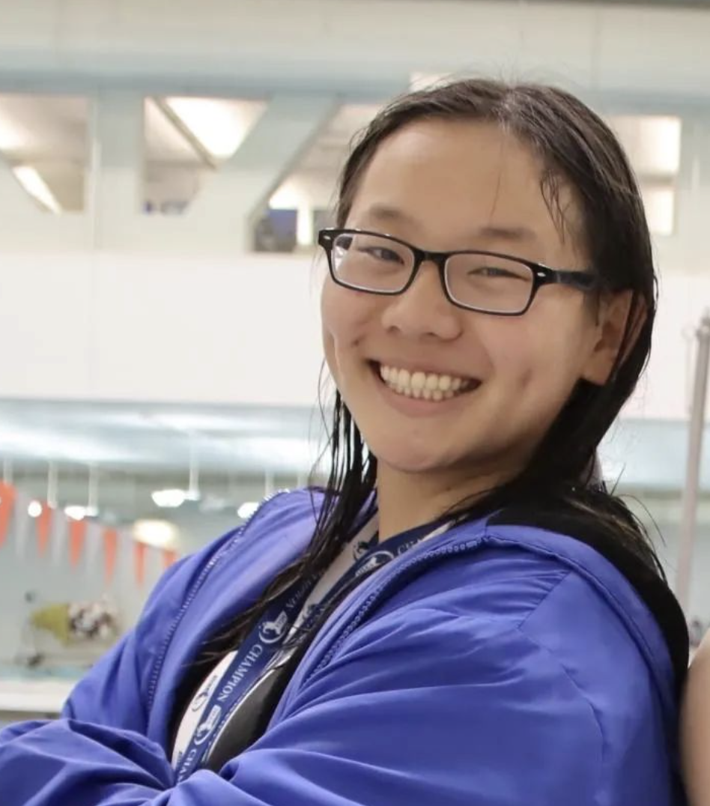
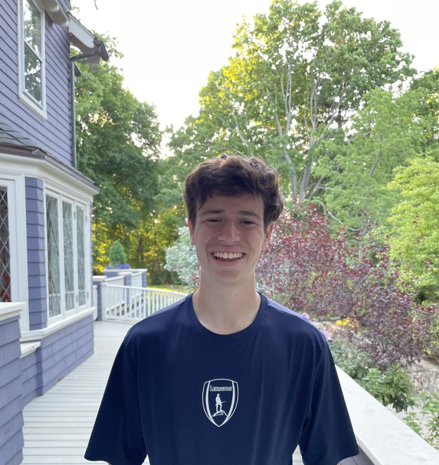
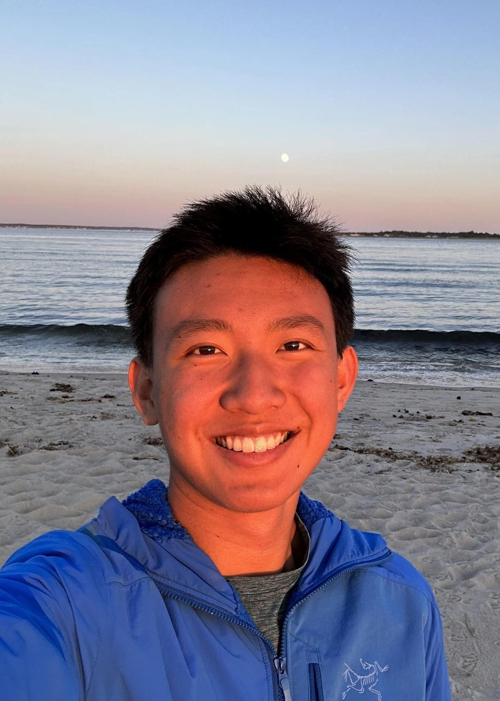

LHS Senior Seminar 2023
About The Panel
In this panel, members of LHS’s graduated class of 2023 shared what they had done and what they wished they would’ve done differently during their time at LHS. Through this diverse cast of experiences, we hope you will get to know our panelists and listen to the many perspectives and pieces of advice they have.
About Our Panelists

Audi Lin
I’m Audi, a rising first-year studying computer science at Carnegie Mellon University. Throughout my time at Lexington High School,
I held leadership positions within LHS’s swim team, the Parity Bits(one of LHS’s robotics teams), and the LHS School Store. In my
free time, I enjoy creating and trying new things!

Eli Olcott
Hi! My name is Eli Olcott. I recently graduated from LHS and I’m an incoming freshman at Harvard planning on doing computer science
and philosophy. I was Captain of the Lexington Soccer Team, got on the U.S. National Futsal Team, was part of Lex STEM Youth Group,
created my own custom newsletter and video game (which got banned by the school), I liked Barbie’s soundtrack a little too much, and
I have recently gotten into rock climbing.

Ellen Wang
Hi, my name is Ellen Wang. I recently graduated Lexington High School, where I served as editor-in-chief of the school newspaper and
class officer. I am on the US International fencing team and a rising freshman at Stanford University.

Jaime Yu
Hi people! I’m Jaime, a rising freshman at Stanford who loves all things engineering and earth science. I am the former captain of various
STEM clubs at LHS (envirothon, science olympiad, ocean sciences bowl), student researcher, and past team member and current mentor of the
US Earth Science Olympiad Team. I spend nearly all of my free time outside from hiking, climbing and running to building random shenanigans.
Lotem Loeb
Hi! I’m Lotem and am thoroughly experienced with LPS in the realms of academics, visual arts, civic action, extracurriculars, and community
service. I enjoy reading, immersing myself in nature, and listening to all types of music; and doing all three is my favorite!
Pria Sawhney
Hi! My name is Pria, I’m a rising freshman at MIT planning to study chemical engineering. At LHS, I was a club captain for FIRST Tech Challenge
team 4029 and a captain of the National Ocean Sciences Bowl team.
Jason Alexander
Hi, I'm Jason, I'm a rising freshman at UMass Amherst majoring in computer science and philosophy. Throughout my time at LHS, I had a lot of
fun exploring different career paths, looking for ways to combine my interests with my skills. In my free time, I like working out and playing
video games.
Isabel Li
Hi! I’m Isabel, a rising freshman at Harvard majoring in neuroscience. During my time at LHS I danced ballet, led cultural events/programs, and
explored neurobiology through the realms of civic impact and research. In my free time I like rewatching Ferris Bueller’s Day Off and losing at
board games.
Alicia Li
Hi everyone, I’m Alicia Li, an incoming freshman at MIT. At LHS, I was part of Math Team and LexMACS, along with being the student spokesperson
for Lexington in Conversation. I qualified for Math Prize For Girls 3x and have been researching and studying at MIT PRIMES for 5 years. In 2020,
I founded the organization Watch To Donate, with members from around the world, using technology to allow people to donate to charity for free.
In my free time, I love to dance!.
Panel Prompts: Section 1
1. What were your high school activities and what were your extracurriculars throughout high school?
Alicia: Hi, everyone. I'm Alicia Li. I'm an incoming student at MIT. So in high school, I mostly
did a lot of math and computer science stuff. So the biggest thing I did was MIT Primes,
which is a research program. So I did adversarial reinforcement learning research for two
years and then the year before that, I studied theory of computation. And then the two years
before that, I did recreational math research all at MIT primes. Outside of primes. I also
founded a nonprofit called Watch to Donate. And we essentially provided people ways to
donate to charity for free. So we did this by developing two mobile apps where people can
play games and
then the revenue is donated. I'm really combining my passion for computer science and
technology to help others. Outside of that I was also involved in Lexington
Conversation, which aims to diversify our school curriculum, as well as I
danced for 15 years and I was part of the math team and also Lex MACS, which is the math
and computer science club.
Audi: Hi, I am Audi. My main activities in high school are robotics and swimming. For
swimming I did for many, many years, like 15 years-ish. For robotics I picked up in middle
school and continued to follow that throughout high school. I also did a lot of other clubs: like.
school store, debate, band, frisbee, and softball. Outside of school. I did mostly swimming and
a decent amount of tutoring and teaching. Over the summers, I intended to do more summer
camps instead of research..
Ellen: Hi, my name is Ellen. I'm a rising freshman at Stanford University. I have been on
the US National Junior and Cadet fencing team and represented the US to compete in
many countries for the sport. I served as editor in chief of the LHS
school newspaper - the Musket and was also elected for three years as one of the four class
officers of the LHS class of 2023 Student Council. I'm also part of the Lexington Youth STEAM
team, a writing teacher for middle school students at a non-profit organization, and I have co-
authored academic research papers.
Eli: I'm an incoming freshman at Harvard. I plan on doing computer science and philosophy
and in high school, I played soccer a lot. That was a big thing that I did outside. I also coded
my video games. I created a custom newsletter and reached out to local newspapers here,
particularly the Lexington observer. I then created a Lex budget simulator which basically told
how much of your tax money was going to which things so I built the website for that.
And then on top of that, I also was the captain of the Lexington soccer team. And that was
kind of my main extracurriculars, and I've also done tutoring on the side and have hosted a
moderator issue discussion group. So those were kind of my main activities.
Isabel Li : Hi, I am Isabel and I am an incoming freshman in Harvard University in
Neuroscience. Most of my time outside of school is at Ballet. I competed in Youth American
Grand Prix, universal ballet competition etc. and qualified as a finalist. I think dance was an
activity that was closest to my heart just because I just love the community so much.
I also found it a pen pal club and ran my own business where I taught English to kids in China.
I published biochemistry research, volunteered in simulated organizations and shadowed
interns during the summers.
I was also co-president of the youth against Alzheimer's club and on the side I ran a
baking fundraiser with friends and won gold at our regional competition.
Jamie: Hi, people. My name is Jamie. I am also an incoming freshman at Stanford this year
along with Ellen, and like Ellen I spent some of my high school fencing although not
nearly as much as she did. And in high school. I was the co-captain of Science Olympiad,
which is a science club and also a co-captain of the National Ocean Sciences bowl along with
Pria here, and Envirothon. I did a lot of school science clubs, mostly in the fields of earth
science as well as engineering so I did a lot of building things and a lot of talking about Earth.
And in Envirothon, I spent a lot of time talking with the Town legislature about town budgets,
etc.
I did some research for a while on ocean thermal energy conversion. I was also part of the
United States Earth Science team and competed internationally in 2021. And since then, I've
been a mentor at the team. And in my free time I do spend a lot of time outside. I spend a lot
of time hiking, running etc.
Jason: Hey, I'm Jason. I am planning to go to UMass Amherst for computer science and
philosophy. I guess my biggest thing that I did during high school was that I participated in a
summer project at Microsoft working for a car manufacturing company using augmented reality
with AI visuals like detection of text as well as finding machine manuals on factory
floors to improve worker safety.
After that, I also worked a little bit on making up a book but I didn't finish it in time. But I was
working on a book for the consequence, this of like the AI explosion we see right now and like
the ethical implications that in society so I was working on that. On the side. I did a lot of
tutoring at different places. I taught tennis for like five years. I also did piano and
then I volunteered at some clubs in school. I volunteered in a club where we like revamped the
LHS school website. So that was pretty fun.
Lotem: Hi, everyone. I'm Lotem. I'm also a rising first year at Harvard. Throughout high
school, I attempted to be involved in a range of extracurriculars that shifted throughout my four
years, which mirrored and also in birth, my personal development. I forgot to mention that I'm
planning on studying psychology and biology. My biggest activities were project 851, which is
actually outside of LHS. It's a youth service organization which encourages eighth graders
across Massachusetts to learn to serve in their communities. I started off in eighth grade.
And then throughout my four years in high school, I assumed different mentorship and
leadership roles. I also worked for, or I volunteered for a Russian School of Math mentorship
program, which works with elementary school students. And then I became the Executive
Chair for that for two years. During the summers I mostly focused on volunteering at camps
and doing a lot of photography activities. I also was in a bunch of clubs at LHS including folio,
the art magazine where I was an art editor. I was a leader for the senior pen pals club, and I
had a few other things and I started off by playing soccer on the JV girls’ team. But I decided
during the pandemic that that wasn't really for me. Throughout my high school career, I
assumed different roles in different clubs and was mostly using it as a way to feel comfortable
in my extracurricular skin, my academic skin and also just for myself.
Priya: Hi, my name is Priya. I'm an incoming freshman at MIT along with Alicia. So going into
high school, one of my biggest things was showjumping. I rode horses competitively for
almost 13 years of my life. So that was one of the biggest things I did. Along with that I also
worked at my barn so I was teaching younger students and I also volunteered at a local
therapeutic riding facility. And then going into high school, I continued with science bowl. I
kept mentoring the local middle school diamond Science Bowl team. And I also started a
National Oceanic Science Bowl, which I ended up being a co-captain along with
Jamie, but instead of earth science, I was studying marine biology. And then in COVID, riding
kind of stopped for me, and I picked up robotics and I ended up being a club co-
captain for one of LHS robotics teams for 292 Bits to Byte and so on that I competed in
FTC (FIRST Tech Challenge). Throughout my summers, my first summers were primarily more
summer camps teaching for local math camps. I got my sailing certification, stuff like that. And
then as I got older, I spent one summer working in a corporate lab, doing kind of biomedical
chemical engineering research and then my last summer working at a Harvard MIT affiliated
kind of biotech lab that was more academic and less corporate.
Alicia: So I've always been a math girl, like math has just been my favorite subject. And I think
math is a good foundation to have if you're pursuing any field of STEM, which is why I focused a
lot on Math competitions. I did like AIME five times and Math Prize for Girls three times, which I
highly recommend applying for, and then I wanted to branch off into research just to see what it was
like. So that's why I did MIT primes. And I founded my nonprofit Watch to Donate in the summer before
sophomore year, just as like, I don't know, I just wanted to do something because it started off as
just a YouTube channel in which we like to make videos and then the revenue is donated to charity.
And I just wanted to do something because there were just so many issues back then. And there still
are a lot of issues now. And as a student I felt like I couldn't really do anything about it. So
making videos was just the way that I knew how to do and then making apps as well. And then outside
of that I have been dancing for 15 years. I love it so much.
Audi: In school stuff, I mostly chose to take the harder STEM courses. One of the things I ended up
regretting was taking a course in humanities that was really challenging for me. I took it because I
thought I had to. For senior year, I ended up taking the courses that I wanted to take even if there
weren't many people I knew taking. That was sort of school wise. Extracurricular wise I ended up sticking
with swimming because I was pretty good at it, and I had made a lot of pretty good friends. Even though
I joined a lot of clubs in freshman year, which I do recommend, I ended up sticking with robotics and met
a lot of really close friends that I would spend hours every single week with. And also, one thing I enjoyed
a lot was community service and I ended up tutoring in English and computer science. And that was a way for
me to not only help my community but also in a way I learned a lot by teaching other people.
Ellen: I always loved reading and writing since I was young, and my freshman English teacher happened to
be the club advisor for the school newspaper. In my sophomore year, I joined the Musket as staff writer.
Through my involvement in this club, I found inspiration to teach writing classes to young female students.
This mentoring process ignited a deeper interest in research and academic writing. As for my unexpected
journey into student government, it all began as a random idea to run for an election. I decided to give
it a try this. To my surprise, I found great enjoyment in serving on the Class Council board and contributing
to the planning of events for the Class 2023. My journey in fencing began at the age of eight and a half when
I decided to try out a lesson. It was quite a random choice, considering I was already involved in other sports.
However, from that very first encounter with fencing, I was hooked, and my passion for it has only grown stronger
ever since.
Eli: So in my experience, I have found the best way to find which activities you actually want to pursue is by
casting a wide net. So trying a bunch of stuff out and then kind of narrowing down from the things that you really
enjoy and kind of the aspects that you really like. So, from a young age, I kind of realized that I really enjoyed
problem solving. And I remember there was this one Christmas break, it was in like seventh to eighth grade, when,
you know, I was looking up on YouTube and I found some cool coding videos and I was just like, oh, this is awesome.
Isabel: I definitely agree with Eli that casting a wide net it's a really great way to find out what you like to do.
Going into high school I basically just did dance and didn't have any idea of what I liked. My freshman year I'm
like Audi. I was not prepared and I didn't sign up for any clubs. I joined two clubs in the middle of the year. But
yeah, so that first half of the year, I didn't do anything and I didn't really do anything to help me explore. But I
think just the second half of freshman year and then going into sophomore year, I explore different things. And I
figured out that I liked dance, Chinese culture and science. And so not only did I pursue these interests separately,
I also explored them in combination. For example, I wrote a paper on the science behind dance and another time, I helped
put together a dance performance for a Chinese cultural night so even though I liked a lot of things, I kind of managed
to see how they work together. And my other pursuits kind of history and baking were mainly just for fun and I think they
were also part of my exploration.
Jamie: I totally echo what everybody here has said which is to try everything. But then a big question is how do I try
everything? Like there's so much stuff. Do I even know what to try? Or how do I even know that there are things to try
and what I found super useful is listening to your friends and especially old school friends like when I went into high
school a lot of the clubs I tried, because my coaches in middle school, these were the clubs they did and they thought
it was awesome to be, like Jim, you should try this is a chill. I'll try and they ended up falling in love with it. Another
thing is just because you don't like it the first time doesn't mean that you can't try it again. Like I always thought Earth
Science was super dumb. It's like, you're learning about rocks. But now like that's all they do every day is I learned
about rocks, which like there's an interesting side to everything. And it's partly what you're good at. Right, people
naturally like doing what you're good at but at the same time, like you can totally do things that you absolutely suck at
if you like, if you enjoy doing it. For example, today I just rode on a bike for an extremely long period of time and I'm
really bad at biking. My friend is so much faster but I had fun so I tried it. And lastly or not lastly, but another thing
is the community around you matters a lot. I tend to join clubs and communities where I really respect every individual
that I'm working with. Because I want to be surrounded by people who I can learn from, and I want to be like these people. I
want to surround myself with the people who I want to be. I think that's like a big part of everything that I chose to do.
Jason: Yeah, I completely agree on the idea of casting a wide net. So for me the reason why I like it all again, like
the reason why I eventually got to computer science is what I wanted to do and why I chose those activities in high school.
For the longest time and like elementary school and everything I loved writing so much I would write so many stories. I was
like a young kid, I tried publishing books, and none of them were, but it was just because I had a passion so that okay,
I'm going to be an author when I grow up. No, I decided in middle school, I'm not going to be an author. I'm going to be I
think I wanted to be a philosopher and then I realized I don't want to do that. I want to maybe make a little bit more money
and have more of a concrete impact on the world. So that's it, okay. Architecture Design, I can still have a sense of art
and I love the idea of people like walking into buildings and making stuff and so I went around. I went to a lot of different
colleges then with my parents because they were like, 'Okay, gotta start thinking about college,' right?
I had a call with one of my friends whose one of her family friends was an architect. And he tells me this horror story of his
college experience and talks about work life balance in architecture and design and all these things. And I was like, wait, this
doesn't seem sound for me. So now I'm left here. It's high school starting it's like, it's like the end of sophomore year, like
half of everyone else in the school already knows what they're doing. They have so many things. I have nothing. I'm sitting here
my entire trajectory is off, right? I swore when I was really young, I would never do computer science. And then I decided, well,
this I have to do it and then I would force myself to like it and I think was pretty successful. So I chose extracurriculars that
would set a reasonable timeline that I could catch up to a point where I could get into college I'm happy to go to. I started off
just trying to learn by myself and I tried to just work on things like teaching places and getting internships. But now that I'm
past that point, I'm trying to get back into seeing where my passions are going. I'm getting back into a double majoring in philosophy
and trying to write a book again, because I think eventually your passion does call when you come back to it. So even though I
stressed a lot about college and I felt really lost during it, I did struggle through that. I think in the end I picked a path that
was logical, but I still left myself room to eventually find my way back to who I was.
Lotem: I am trying to further echo what was already mentioned, because it really is very wise. We're speaking from four years of
experience here, all with different interpretations of the LHS and LPS curriculum and experience. Although we can mention some
of the ills that are associated with Lexington High School, there are also a lot of positives, which is a lot of it boils down
to exploration, and so many things being available to you.In the beginning of my high school, I was kind of in this echo chamber
of needing to do certain things. You need to commit yourself to something and then not give up or not change. And my freshman year
I didn't cast a very wide net. And I don't think that actually was terribly bad because it allowed me to have time to adjust to LHS.
And playing soccer allowed me to know some of the older students and to have their advice at hand. And then as I started to listen
to myself more especially through isolation with the pandemic and amble reflection. I was able to actually realize all of the
available opportunities at LHS and beyond. And this allowed me to dive deeper into community service. I also failed to mention
in my activities answer that I was a part of something called LHS Chat, which is a student and teacher run club, which facilitates
community conversations regarding race, racism and social justice. So as a facilitator, I also helped curate a lot of the meetings
and I also worked the job my junior and senior year, which for a lot of people is not entirely typical in Lexington, especially if
you're very committed to your academics, but I was trying to listen to myself in terms of what I needed if I needed to relax or I
needed to do more things because I was really passionate about community service, and about social justice or even about art and
I tried to focus less of what was best for my resume and more so what was best for myself, which also took a while.
Priya: I don't think I have the most insightful answer to this question. In terms of the activities, I pursued in high school,
they all tended to be kind of continuation of what I did in middle school. I think middle school was a big kind of exploratory
period for me, and I found that I really like stuff like hands-on building and engineering. That's why I pursued robotics. I’ve
been involved in it since I was in second grade. it's kind of all led up to that. Same thing with writing started when I was
super young, and fell in love with it and continued it. But I think high school for me was really less kind of finding new things
that I loved and more just like building on this journey that I've already been on for so long.
3. How did you take advantage of the resources at LHS or surrounding LHS?
Alicia: For me, I think it was mostly like teachers, so I was always super engaged in all of my classes, especially
when I remember my freshman year English class. I participated a lot, had some interesting, wacky ideas. And my teacher
actually invited me to Lexington in Conversation because the director of that group was looking for people who really
liked reading, students who really liked reading. So yeah, definitely just be super engaged in your classes so you can
get those kinds of opportunities. And it's just like, it elevates your learning if you actually care about your classes
and try. And I guess another example is AP chemistry. I was super involved in always asking, Pria can attest to this.
I'm always asking the questions to try to stop my teacher. And from that I developed an interest in theoretical science.
I'm really just trying to get the most out of your classes and your teachers because they are there for you.
Audi: I definitely agree with Alicia. For me, connecting with a lot of teachers was important. It definitely helped me
through some tough times. Because many times if you're struggling with homework load, as I did, since I took a lot of
classes, teachers will help and you ask for extensions. And doing that helped me a lot to get through. You can always
ask for help. Even if you're like, oh, no one else is asking for an extension. You can always ask for an extension or
ask your teacher “can I talk with you about this test? I'm worried about this.” Really, anyone is willing to help you.
You just have to reach out first. As to activities, I think it's kind of hard, harder to get into different activities
as you go through high school because that's when everyone kind of starts choosing. But I felt in LHS for freshmen and
sophomores, there's always the activity fair so all the clubs will set up their little booths. And you can type email
into literally every single Google form that anyone has and you get free candy, and then they'll send you emails. And
even though you might think, oh, I have to commit to all because I signed up to. No, you do not have to. What you can
do is just sign up for clubs to maybe attend a few meetings. If you like it, then continue with it. And if you don't
then you can just say “unsubscribe”. That’s it. And even if you don't end up sticking with a club, you have met a lot
of people in your grade and it's overall very useful. That's my advice.
Ellen: there's a lot of great teachers at LHS like many of us have shared and these teachers are willing to help you.
But many times, you need to be proactive and build up the courage to go out of your way and sometimes ask for help.
There is a common misconception that seeking help may make you appear less intelligent, But I think that asking for
assistance is a really great way to develop interpersonal skills and can significantly contribute to your growth as
a student, and many teachers have office hours which are after school, you can drop by and just ask some questions or
get some clarification if you have problems. And I also think your parents are another resource that many people often
neglect or forget about. every family is different, but I think during my high school years, when I encountered
difficulties, I think opening up to my parents also helped me a lot and they gave me a lot of advice.
Eli: You know, looking back, I also personally think with LHS in particular, I did not do the best job of actually
taking full advantage of the resources that were provided to me other than soccer, which I absolutely loved. I didn't
join any clubs and I also don't think I took good enough advantage of the awesome resources that our teachers there
until my senior year, which I think personally is a little too late. That being said, I was able to like that I tend
to be a very entrepreneurial person. I like building my own things. And I was able to get in contact with a lot of
people in the Lexington community who loved helping people out. And that was a huge resource that I found to be very
useful. And I got in touch with a stem youth group, which was an awesome experience to actually get hands-on coding
experience. I was able to get in contact with Lexington Observer, which is a local newspaper, which I also thought
was an amazing experience and also gave me hands-on abilities to actually code projects for them and stuff like that.
I did some freelance web dev on the side. But I have found, you know, the biggest takeaways that I had, were if you
want to take advantage of what is already there, join clubs and find people that are excited about the same things
to you. And really take advantage of that. And if you want to build your own thing, you're going to have to be more
proactive and reach out to people to see if they are interested in what you're doing. Or if they have advice or things
like that people love thinking that they're helping other people. And so giving them the opportunity or joining them
is a great way to do that and also provide yourself with a lot of opportunities. So that has been my personal experience
at LHS, take advantage of teachers and stuff like that, ask them a lot of questions. I think that is a big regret of mine.
Looking back, I wish I did more.
Isabel: I was kind of like Eli, I did a lot of my own things.
I created my own projects. And I think kind of the hardest part of doing that is reaching out sometimes to cold emails,
sometimes you have to even ask a teacher and I know it sounds really scary, but like the worst thing they can say is no.
And plus, they're probably really honored that you sought them specifically. I kind of utilize my teachers a lot and
also my upper classmates. There were some things I wanted to do, you know, maybe my upperclassmen did something similar,
and I asked them about it, and I think everyone's really happy to help. I also think that teachers, there are some like,
for example, my APUSH teacher was the one that got me linked to the history competition. So there are small little, like,
resources that teachers have that you can ask.
Jamie: I think that in my opinion, the most important resource about attending school in Lexington and also about where
you place yourself in life in general, is once again the people that you can surround yourself with. And the best part
about Lexington is that there's such a strong community of people that really care about what they're doing, whether it
be from science to humanities, and, for example, I do a lot of science and there's a really, really strong both research
community and Olympiad community in Lexington and I found that these people are super helpful for introducing you to things
that they should try. For example, in ninth grade, my captain at that time was like, Yo, Jamie, you already know all this
random stuff, why don't you just try taking the earth science Olympia and I was like, why? What is this thing? And these
people can really introduce you to a lot of other things. And also, don't be afraid to ask the people who are older and
have already done it at once for help. If they don't have time, the worst that can happen is they tell you they don't have
the time. And lastly, make sure that you work with your friends. For example, I might be able to help you with physics or
math, but I suck at grammar and I might help my friends for like 30 minutes on physics, they might help me correct all the
misspelled words I have for a little bit so it's always like an hour long. An hour spent with your friends and helping them
it's never an hour lost but it's always fun and you build connections. And they're like resources that you can use in the
future.
Jason: Yeah, so before taking advantage of the resources at or surrounding LHS I think a really good rule of thumb that I
wish I had followed more is just, if a clear path doesn't present itself to you, you have to force a clear path for yourself.
Like I had an issue of like my idea of getting into colleges, I was taking a very linear process. I would do one thing that
would lead to another thing that would lead to another thing. I'm very slowly going but then I think looking back at it, I
realized that a lot of the people that succeeded found ways to jump ahead, perhaps they were just really smart already. Or
they already studied things for a while and when they were kids, right? But even if you feel that you have a disadvantage,
you're still able to put yourself out there and you're still able to leverage yourself.
Like this isn't necessarily about college, but I realized that after college that I need to do this, so I was like, Okay,
I don't know how my friends are getting research stuff. That seems impossible. I want to do that. I just emailed every
single faculty in the UMass Amherst campus for research stuff, and then I got a bunch of answers. I think it's just like
the same thing as in LHS where you really got to put yourself out there and if you feel like you're kind of done trying.
Like everyone else is doing so many impossibly cool things and you have no idea how they did it, a lot of them probably
just walked into it.
Or they found like really, you know, fortunate ways of getting into things like, a lot of what you're talking about, like
if you have certain teachers that like came up to you and offered you things or like you found teachers that inspired you.
If you don't feel that you're getting those same moments that are really inspiring you or giving you opportunities, it's
always possible to make those for yourself and LHS does a very good job of giving you those opportunities to go and put
yourself out there.
Lotem: As Jason and Jamie just mentioned, throughout high school, I tried to forge my own path instead of following the typical things, that are the typical expectations. So that meant not really listening to upperclassmen, instead, listening to my friends in terms of academics but not so much extracurriculars. Having or listening slowly and reluctantly to my parents, because they do have a lot of advice as well as teachers. And I think that Alicia mentioned this, but participation is very, very important. Although you might be really thinking about your social circle or who you need to meet or what activities you need to do, you are at LHS to receive a good quality education. So that means investing time in your academics and investing time in forging relationships with your teachers, as well as social relationships. I think that I didn't take enough advantage of the STEM opportunities at LHS just because everything is already so stem focused. And now I kind of regret that but I also had a very closed off social circle, which isn't necessarily bad. But that meant that I had to find a lot of my own opportunities, which I'm glad I did, because it allowed me to understand myself in a much deeper way. I think there's also a lot of wisdom embedded in LHS. Whether that's talking to upperclassmen, or your teachers or even just listening to what people say, but you need to listen in a very specific way. Because it's very easy to get caught up in the noise like, oh, everybody's doing this or I didn't get a good enough grade on this test. But you need to prioritize yourself and your well-being, and then finding what is best for you which is really hard. I'm not saying this. It took me four years and I still don't think so. I'll do it as well in college, but it's really just listening and learning and it's a continual.
Pria: So, I think I'm a bit different than some of the other people who give their answers first, when it comes to actual school and academics. I tended to kind of go on autopilot and I didn't really engage that much with faculty in terms of going to office hours and things like that. I will say the point that Lotem made about class participation just cannot be understated. Like you learned so much more though, if you're answering questions and you're talking to the kids at your table. I think I honestly personally understand topics best when I kind of sort of understand them and then try and explain it to somebody else. So really engaging with your table groups and stuff like that. Like there's a reason that your tables are like clumped together and like desks of five.
Other than that, I think echoing what Jamie said about really talking to your upperclassmen and people who are older than you. A lot of the clubs I joined ended up joining not only because I had experience with them, but I also was mentored by people who were current captains and things like that. And I think there's a lot to learn from people who are kind of going down the paths that you want to pursue in the future. Like I've talked a lot to people who you know, went on to become engineers and things like that or went on to, you know, attend colleges that I really, really wanted to go to. there's definitely a lot to be learned from the people and also LHS does have a lot of resources in terms of libraries and databases and things like that. And when it comes to college admissions, I don't know if the webinars are going there but like Naviance there's a lot of data there that you can learn from and it really helps you, you know, build your college list.
Panel Prompts: Section 2
1. What was your favorite class and your favorite teacher that made the biggest impact on you?
Lotem: This was a clear answer for me. And Eli can maybe attest to this. It was my British literature class senior year which now has changed the name, and it doesn't sound as good,
but I swear it was amazing. It was with Miss Conlon. She's an English teacher I had for junior year. It was really engaging because it was a tiny, tiny class. We had, like 11 people,
I think, and everybody was engaged with the material. We were forced to ask questions and participate. And the reading material is quite interesting. It was Shakespeare, Sherlock Holmes
and post colonial authors. The class activities were all great. And I felt that there was such a good environment, both socially with the teacher and participation. So I really enjoyed
that, even though I'm not planning on studying literature or humanities in college.
Pria: Yeah, I'll keep it short and sweet. My favorite class was honors Precalculus in junior year, and my teacher was Mr. Werner. I think there might be some mixed feelings regarding him, but I really enjoyed
it. I thought he taught the class in a really engaging way. He kind of forced you to take the next step and figure out how a particular theory or idea worked, which I found really helpful. He was also an
accessible teacher. He was always there after school. I'm not somebody who has to go to office hours, but there were periods when I struggled. And he helped me see that, sometimes it's not really a question
of studying harder. He helped me understand that I understood the content. I think he really understands what it's like, you know, at LHS, which some people might argue is a competitive high school or a high
school where there tends to be some extra pressure. So he's very in tune with the student body and what people's aspirations and goals are and I highly recommend them.
Jason: First of all I gotta give a big shout out to Mr. Wilson for AP US History. I'm a little biased because I love history personally but also he's just an amazingly entertaining and really witty, sometimes
insightful teacher. He's really supportive all the time. I remember one time when I got last place in the class. He sat me down and he was like “keep trying”. He's very motivational. He is a teacher that will
really make you feel that you can do it, even if you don't feel like you can. My other favorite teacher is probably Mr. Brunner, who is a little bit controversial, but he is the nicest man I've ever met. In the
winter break of my senior year, he went out of his way to help me with my college application. He stayed after school with me to talk about it because I was really stressed about it. He is a very harsh grader,
but he will teach you well, and he is an amazing human being.
Isabel: So this question was one of my biggest questions during high school. I'm a pretty introverted person. There was a period of time in COVID, when I was just sitting in my room and doing nothing social. And
honestly, I think it's a great thing to know what you like. And if you want to connect, email is one of the less stressful ways to go. I had to build up the courage to do that as well. But remember it's just a
few sentences, and they see it for a second, and they can decide what they say. And also, whatever you think is a big deal, like how are they going to respond, or what are they going to think about me? It's not
a big deal to them. To find the people, I would say, just find a community, join a club. And if you don't have one already, upperclassmen, teachers, school counselors are also great resources. And also, you can
email alumni for support or help and I think all of us would be really glad to give you help.
Jamie:I personally think that clubs are a great way to meet people if you are a bit introverted. I know tons of people in my clubs who are really introverted and that's just because you're forced to work on this
thing together, like it or not, you're stuck in that space. So you don't really have to initiate being social. It kind of happens naturally. If you work on the project together with somebody, you're going to
become friends with them. So clubs are a great way. And for things like emailing your teacher, you might feel your email is terribly embarrassing, but A, it's definitely not that embarrassing from the other end.
Alicia: I am also a super introverted person. Especially since I came to Lexington in ninth grade. So I was absolutely terrified. I'm just thrown into Lexington with no friends. I am an introvert. I was like oh
my gosh what do I do? I think joining the Math team definitely helped with that. So like what Jamie was saying, joining clubs and getting that kind of a support group. I think meeting with people through programs
like summer programs is also a really great way to make good friends. Because you just find people who are interested in similar things and you guys get really close after that, like living in the same place for a
couple of weeks. I think just learning how to take risks and pushing yourself out of your comfort zone definitely helps me a lot. For me, oh my gosh, emailing is the scariest thing. I always overthink my emails and
everything. And so I prefer to talk to my teachers in person. And I feel like that builds a stronger connection as well when you talk with people in person.
Ellen: During my four years in high school, my commitment to fencing consumed a significant part of my time. Weekends often involved traveling to competitions, sometimes even internationally. Being an athlete
also meant late-night practices, which required me to prioritize and manage my time efficiently. To maximize productivity, I used to bring a small lamp to practice and complete homework on the way there.
Sometimes, I'd continue working on the way back; it was all about staying on top of my tasks. I recall a particularly challenging instance when I flew back from France and went straight to school from the
airport. When I entered the classroom, the teacher said, “Take the test now”. Some other teachers may provide some flexibility; however, it was crucial for me to take the initiative, be responsible, and
maintain discipline. Being a high school athlete is undeniably demanding, but effective time management and the use of tools like to-do lists and Google Calendar played a vital role in keeping me on track.
These strategies provided a preview of my week and helped me anticipate and manage my commitments effectively.
Eli: Yeah, so echoing Ellen, I personally did a lot of soccer. So my junior year, it would basically be school then I had like an hour and a half break after school. And then I would play soccer which took
I think four and a half hours. Then I would have a little bit of time at night to finish up my homework. What I have found personally is getting priorities set in your head right. For me, family is number one.
If anything's happened with my family that's what I'm prioritizing first. Second would then be schoolwork. Schoolwork was very important to me. I wanted to be very intentional about that. And then third would
be the extracurricular activities that I had. And then fourth would be, you know, friends. And so with that prioritization, I then used a Google Calendar and to do lists to make sure that I had all organized.
So I was very intentional about it. So I did, you know, hang out with friends, have a little bit of a social life, have fun, on top of doing the things that I needed to do. And having those priorities really
made the decisions that I had very easy, because I could just be like, oh, you know, this is a family thing. I need to do this, oh, this is a school thing. I'll do this after the family thing, because I
prioritize family first. So that is how I approached it. And that has worked well for me. And that's what I'm going to plan on continuing to do in college.
Pria: So I'm going to tie this a little bit into another question in the Q&A that's asking, how much free time did we have in a week to do things other than study and extracurriculars? I mean, to be honest,
I did not have much free time, if at all, but I think why it worked for me is that I was able to really merge things. For me, having a social life, and a social scene, merged almost with my extracurriculars.
Like some of my closest friends were in robotics, so that when we were studying and practicing together, it didn't really feel like work. And I think that's why it's so easy. It was so easy for me to pour so
much time and effort into the clubs that I was doing. Additionally, schoolwork also merged with that. For example, we had a regional competition for robotics one day, and then I had my psych midterm the next
day, and then me and my friend who was also taking that test studied together when we had a chance, and it tends to work out at least for me. How it works with academics is that however much work I have tended
to fill however much time I have. So I know whether I have like three hours to get something done, or 30 minutes, I'm going to use that time no matter what. So you kind of learned to be efficient and focused,
and get something done knowing that you have to move on to something else in the near future.
Ellen: One of my biggest regrets was not dedicating enough time to socialize and spend quality moments with my friends during high school. My focus was primarily on sports, academics, and extracurricular
activities. Looking back, I realize I didn't invest adequate effort into hanging out with my friend and enjoying life. This summer, with many of my previous commitments behind me, I've been prioritizing social
interactions and having fun. It has brought me a lot of happiness and a sense of fulfillment. I've come to appreciate the value of balancing personal goals with meaningful relationships. I've learned that,
while pursuing your ambitions is important, it shouldn't come at the expense of building and maintaining relationships. Investing time in friendships and creating new connections is also crucial for mental
well-being. Knowing that there are people who care about you, and reciprocating that care, strengthens our community bonds and enriches our lives.
Audi: Yeah, so one of my biggest regrets from high school was not really surrounding myself with different people until much later in high school. In freshman year, I hung around the same people, and that
kind of, I think, limited my view on what I could and couldn't do. So I ended up doing the activities that my friends were doing. And then later in high school, I met many new people through different classes.
And that definitely broadened my horizons. And that made me feel more comfortable knowing that I could be friends with anyone in any of my classes.
Jamie: I think one of my regrets, especially later on in high school, is not trying more things. I think it's easy that once you become good at something, or people think that you're good at something, you have
the expectation that you have to be good at anything you try in this field. And then it became really hard to try something new, because you're like, so what if I fail at it? So I wish that during high school,
also in the future, and for all of you guys, that it's okay to try things and fail at it, even if people expect you to be good at it. And I promise that nobody is judging you that hard. I also concur with what
Ellen said, I think a huge part of life is making connections. There's a lot of our world and how it runs is built on the connections you have. So it's really important to get that practice with making friends
and interacting with people during high school.
Lotem: I echo what Jamie has already said. But before I begin, I'd like to preface by saying that I believe that regret is kind of a waste of emotion. You don't really gain much out of it. And usually it doesn't
result in any proactive action. So although there are things that I really wish I did in high school, or I acted differently, I don't really regret what happened because I need to move forward and learn from my
experiences. And as I am today, it is only because of what I had previously done. So I had a pretty difficult experience with my mental health, sophomore and junior year. And a lot of that was related to my
academic expectations. And what I wanted to do with my academics and not so much of my extracurriculars, but I felt like I was letting myself down and letting a lot of other people down when that really wasn't
the situation. What was important is that I was trying and I kept trying. I do regret taking everything so seriously. Like even if you get a not so great grade on a test or you didn't participate as much in
class in one class or you have a really awkward conversation with somebody in the halls and you feel horrible about it or you just had a bad day, don't take it too seriously. It's going to be fine. What's
important is that you keep going. And I know this sounds like a little cliché, but it really is important to continue trying, especially in such a cushioned environment. A lot of people will argue the LHS is
really difficult and I can say the same thing but I know that I wouldn't be where I was today without the difficulties in LHS. But also it's not college . Not really adult life. So you make mistakes, do what you
want, try a lot of things, because you won’t always have the same opportunities later in Life.
Eli: I agreed a lot with what Lotem said personally. I think my biggest regret In high school was that I didn't ask questions when I had them. At the end of the day everyone has these questions that they're
worried that people are gonna judge them, or they're gonna think that I'm stupid. That was a big concern I had and I realized I limited the amount of learning that I had. I struggled so much more because I
didn't just ask the dumb question. And I will also now be the person who unapologetically asked somebody to explain the same concept five times over and I've realized I get a much better foundational
understanding of the content as a result. I have been able to go a lot further in a number of other subjects as a result of that. Particularly In math, there were a number of concepts. When they were
introduced to me, I was just like, I totally get that, and later, I had absolutely no idea what they were. I have found now when I don't actually understand something, not only did I have that question
but five other people later would tell me ‘oh my god, I have the exact same question thank you so much for asking that’. That was a massive one for me. Another one is everyone's figuring stuff out so
just try new things. and if you fail, you failed. The next thing that you do is learn from your mistakes and move on. That's what's really important.
5. What is some advice that you wish you had taken more seriously in high school?
Lotem: I think that a very important quote, to internalize as early on as possible. Well, I still haven't gotten this one yet. But it's directly to some emphasis, the only constant in life is change.
Now, that's a very difficult thing to accept. Because sometimes things are so great that you never want them to change. And sometimes things are so horrible, that you never think that they can change.
So I need to work on accepting that myself constantly. But I wish I could have understood that everything will in fact, be okay. And to persevere is the only choice because that is what life is. It's
perseverance. So there's a comfort to be known in the impermanence of everything. And just make sure that you're listening to yourself and not just going with what everyone else is trying to do.
Jason: Yeah, so some more wise words. I think that something that I wish I had paid more attention to, something that I think should be said is, you are living your life. This is your life, this high
school experience is yours. And even though there's a lot of pressure, of course, like we're in a seminar like this, we're talking right now about college. Not everything is about college. And also not
everything is about always succeeding. As we were saying, you have to persevere. Basically, it's okay to always shoot for the moon. But also you have to realize that it has to be you that wants to shoot
for the moon. Yes, you can be put into a position where, you know, you're pressured to do great things, which is good. But in the end, it is your life. And in the grand scheme of things, it is more important
to realize that we live our lives, to tell stories about ourselves, and to make a story that would make us be proud of ourselves in the end. And it's our responsibility then to step back every now and then
and realize, why are the things that I'm doing important to me. Why is it that I want so badly to go to such a good college? Do I even want to go to such a good college? Is that a forbidden question? Can I
kind of question why I need to try so hard for these? It's not forbidden to ask those questions. Everyone's path is different. The nicest people I've ever met in my life are the most humble people. I've worked
in soup kitchens with the most amazingly smart geniuses ever who have thrown away what some people say, the opportunity to make probably millions. But they've decided they want to help people. And that is very
honorable, because they're living the life that they decided they want to live. And it's never the wrong time to question why we're doing these things. So just keep it in mind that as we say, yes, push on,
persevere, do those things but also step back and ask yourself if you truly want to do this as well, because it comes down to that.
Jamie: That life is really not about reaching the final destination. That's like, if you think about it, If you're like, I just want to reach the final destination, like everybody dies. It's kind of a
really sad final destination, or if you're hiking, if you just want to reach the final destination, to the top of this mountain, then the rest of your hike sucks. Or in the same way when I initially
started high school, I really wanted to win the state Science Olympiad. So I did all this work to try to get there, but in reality, what took 99% of the time is your work to get there. So I think you
really want to take the time to enjoy the entire process and learn from the process, rather than just get to the final destination.
Eli: Yeah, actually adding on to that, there's a really good metaphor that I had heard that it kind of goes exactly off of what Jamie was saying, but the person who likes to walk is going to walk many more
marathons, and the person who likes finishing up, right, we all know those people who, you know, finish a marathon, they posted on Facebook, they show all their friends, and they never shut up about it. But
the people who actually break the records who push themselves even further are the people who like doing the day to day work. And like going through and running those marathons. Those are the people like Eliud
Kipchoge, for breaking the two hour marathon record and are actually making a difference. And so the biggest piece of advice that I was always given is, I actually think I've kind of taken to heart at this
point in time, but I don't know if I really took it to heart in high school, is finding things that you like doing day to day and actually working on that,making an impact in the world and doing that as much
as you can. The opportunities from that will present themselves if you put yourself out there and actually put in the work. So that is kind of my personal experience with that. I did that with coding. I'm now
trying to do that. Or give other people those opportunities through, you know, the tutoring that I do, and presenting different ways of doing that as well.
Audi: In my experience, what I mostly did to take the initiative in school was to participate a lot in class. Zoom class was awkward: the teacher would ask a question, and no one would respond. And you're
just like sitting at the computer and staring for ten seconds, to be like, do I answer or do I wait for someone else to answer? I know the answer, but it's too late to answer. So, in general just trust
yourself, you know yourself best, like it's really easy to fall into this pitfall of comparing yourself to other people but you know yourself best. Make the choice that's best for you and if it doesn't
work out then you'll learn from your bad decisions and make more good decisions. So yes, do that.
Isabel: So people told me that, every minute matters, then it's easier to work as much as you can, because if you're not working someone else is, or you're not maximizing your full potential.
And I feel like this advice was one of the things that kind of ruined some parts of my year, especially during sophomore year. Because it's just a cycle of guilt tripping yourself into working.
And, you know, it kind of justifies all-nighters and things like that. And to that, I would say, never feel guilty for self- care. Never feel guilty for just saying, okay, that's it, I'm done,
I'm putting my books away and going to bed. Because at the end of the day, school is just school and your health, and friendships matter infinitely more. And also, if you really want to think
about it from an objective point, sleep is important for your function the next day. And if you keep on going through the cycle, your mental health is just gonna get worse and your academics
are also going to get worse.
Pria: Yeah, that was a really insightful answer. Mine is not going to be that insightful. I was just gonna say that, when you're in high school, there tends to be a lot of unsolicited advice,
running around about classes and how hard they are, and who's a good teacher and who's a bad teacher. I would say, take everything you hear with a grain of salt. Because a lot of times, certain
subjects just click for certain people, and for other people, they might be a harder journey to get through. And you never know what you're going to love or what you're going to be really good at
unless you try. So I just highly recommend that if you're interested in something, you should go do it. Like there've been a couple of classes that I've regretted not taking during high school,
because I was worried that I'm not going to do well. It's going to bring my GPA down. And now I'm gonna go with that stuff in college instead. But yeah, really just go for it with classes.
Don't think too hard. Like, trust me. You can really manage anything if you put your head to it.
Jamie: I think that this goes back once again to the idea of just trying things. And a lot of taking initiative is even if you yourself are not necessarily in a role where you have the title to do something,
or something may not necessarily be in your jurisdiction, it never hurts to say ‘hey can I help with this’. Because it oftentimes leads to or it opens up a gate to a variety of other possibilities.
So for example if there's a task that is generally delegated towards the captains of a club and you're not a captain, that doesn't mean you cannot say hey I had this idea, this is my idea, would you guys be willing to try it out.
That's like a way of taking initiatives that I often use a lot in high school. And I think that in general it's not a bad idea obviously, like obviously you always wanted to do this but it's not a bad idea to talk with your leader
and then work with leadership to incorporate some of your ideas as well.
Lotem: I feel that I'm very fortunate to have the parents that I do. But also sometimes it's easy to get frustrated with your parents, when they're constantly offering advice, and wanting to push you further. So it took me a while to
accept the fact that my parents are very academically minded people, and to accept the fact that I'm very similar to them in that manner, and in a lot of other ways. And I think what's important is to listen to your parents, because
they have a lot of years over you, like they've been living for longer, they might not necessarily be academic, or have the same opportunities that you do as a kid. My parents didn't, they lived in Israel. They immigrated here, and
they had to do, they had to be very, self-preservation. I don't think that's the right word. But I was self-reliant, that to be very self-reliant and emigrated to the United States, and also just finding and forging their own path.
And they offered me a lot of advice on how I can do that. And even though I didn't always listen, they were always important in helping me both. Like, maintain myself and sustain certain habits, emotionally, socially and academically.
So although you might not like everything your parents say, and I definitely didn’t, throughout high school, it's very important to listen to them, to realize what they're saying, and then think through it. You don't have to accept all of it,
but at least consider it for a bit.
Priya: So I think particularly in terms of like the college admissions process, my parents were a very helpful resource, because when it comes to college admissions, and like writing your application, and stuff like that, your parents are
really like the only people that are truly in your corner and don't have like, ulterior motives and stuff like that. Because even with the college counselor I had, she's still trying to maximize her yield of getting kids into top level
schools and stuff like that. So your parents are the only people that really have that kind of in depth knowledge of what your life has been like, and what you've taken part in, and they can help you see, like patterns. And like, the way
your story kind of weaves together through your activities, and really helps you kind of create a proper, really holistic application, obviously, without writing it for you.
Jason: So in terms of parents, and what I think they helped with, my parents were very into making sure that I was independent. So it was like, well, you're paying for college. And also, you're studying for yourself. Like, they were not
very big into helping you with anything. They were good parents, but they made it very clear that my future was in my hands. And I think that just helped me a lot because it made me feel like at some point in my life, I have to eventually
step up and be responsible for myself. So I think that was good.
Audi: One thing that my mom told me is this one Chinese Idiom that's like “ba miao zhu zhang”, which is basically based on the story of a Chinese farmer who wants his crops to grow really, really tall and really fast. So he pulls them out
of the ground to make them just a little bit higher. And he's like, look, all my plants are taller now. But then the plants end up dying because they've been prematurely like, taller, for lack of a better word. For me, that's what my mom
told me, was kind of her approach because I think it's, especially when you're in elementary or middle school, it's really too early to be forcing your kid to go in one direction or another direction. And what I think really helped me was
my mom being there for me like supporting me from the sidelines. But in the end, I was the one making the big decision in my life, saying, I want to do this, and I don't want to do that. Like making the hard choices for myself, because
even though they were hard choices, that was a learning process that I personally had to go through.
Eli: So I have found that in my personal experience I am very lucky as well where my parents have always been super supportive about what I've done. You know for soccer I was traveling every weekend to New York or Virginia where I'm flying
across the country to California and sometimes even to Barcelona and my dad was always there. He loves Sports so he loves supporting me in that way. And you know after almost every single game and I'm always in the mindset of oh I did so
many of these things wrong, oh I could have done this better. And something I thought about my dad and l, I think this is something I have found to be very helpful, is he always asked me and wanted me to look toward is not just what I
could do better which was always a default of my mind but also what I did well. Right like in reflecting on a lot of my games, I played terribly and I would mainly be focusing on one or two specific moments of the game where I didn't make
a great pass or I didn't see the guy behind me. My dad would remind me that in reality I played a very good game. And then there would also be times when I would be feeling on top of the world because our team won. And my dad would also
just be like yeah you did awesome, don't get me wrong, celebrate this moment, but also remember there are still things that you can work on. So having them on as kind of a stabilizing function to make sure I'm never too cocky or I’m never
too down on myself was definitely something that I have found to be very useful. As a kid, I have found that to be very impactful.
Alicia: This is kind of orthogonal to Audi’s point I think but my parents forced me to do math club throughout middle school which maybe was a little too early to be pushing your kids to be doing so much math. But looking back I am glad
they forced me to do that because it gave me such a solid foundation for all of my high school. Because of my Math competition background there, I didn't have any trouble with my high school curriculum. And also I ended up liking that,
so maybe this is like a special case. Maybe some of our audience can relate to your parents making you do a lot of math, but for me it was actually really helpful and I think math is, okay I'm maybe I'm piping up math a little too much,
but I think it's really good to have a strong foundation in math and yeah super helpful for high school.
Jamie: I just want to say that from a slightly different perspective to you what some of you have said about parents doing a lot. My parents have been pretty hands off. I have two younger siblings. They take up a lot of my parents’ time.
And my parents are all really busy working too and I did just fine so I just want to send this as a message to all the parents that like if you're busy all the time, it is good to spend time with your kids but also don't have to stress too
much about your kids’ education just as how your kids don’t stress too much about you stressed too much.
9. How important is your GPA and extracurriculars and standardized tests？
Pria: College admissions are a very subjective process. There's a lot of different components that are going into that and your GPA is really one of them. I've heard a lot of things about what your GPA actually does when it comes to
college admissions. I've had people tell me that like oh it's a cut off like if you're above a certain number only that are they going to actually look at your application because they get so many applications anyway.
I don't know if any of this is really true. I will say when it comes to LHS, GPA is hard to tell what they mean because they don't weigh GPA, so kids can be taking like atrocious hard classes and working so hard but then
it's really difficult to get a perfect GPA in that situation. Or I'd be taking not high level classes and have a good GPA so it really doesn't give you a lot of clarity in terms of academic achievements, if that makes sense.
More than that, I think it's difficult because for me I didn't have a ton of international accolades or winning science fair competitions at Regeneron, but I had a GPA that was somewhere up there, so maybe, I think, maybe that
helps balance it out a little bit but yeah college admission is a total black box. We don't really know for sure.
Eli: So adding on to that I think all of these things are points that you should be thinking about. But in reality it comes down to a question of what are you trying to get out of this. A big thing I have found is like you
know why I am taking these classes. I'm taking these classes to build these skills, right, so if you're taking AP CS, So I get the skill to code. If I'm taking AP Calculus, I am learning that as a foundation for what I want
to do later. And that can be engineering or that can be yeah you know AI or it could be AP US History where I'm learning how to argue different points in the history and take different information. And so at the end of the
day a GPA is supposed to measure how much you actually understand the content. But as somebody who took AP Bio and got a decent grade and can't tell you anything about how a cell works, I can't confirm that is how GPAs
actually work, which is unfortunate but true. And so at the end of the day it's what you want to take out of it that I think is important. If you got 4.0 but you don't understand anything as a result, did you really gain
anything from it? Personally I would say no. I’d rather have a lower GPA and have a super solid understanding of a lot of different subjects that I can then build off rather than having a 4.0 but forgetting everything after
that unit’s tests. And this is coming from somebody who did exactly that. So that is a big regret that I have looking back.
Ellen: I believe that GPA is certainly important, especially for college applications. However, it's not the sole determinant of your overall application. There are various components that collectively shape your candidacy,
such as extracurricular activities, essays, and the character you portray through your entire application package. Having a strong GPA can undoubtedly work in your favor when applying to colleges, so it's essential to work
hard and strive for academic excellence. But it's equally crucial to remember that there's more to life than just achieving a high GPA. Embracing the learning process and personal growth that comes with it is equally valuable. I've noticed comments in Q&A sessions like, "If I have a 4.0, can I get into an Ivy League school?" It's important to recognize that GPA is just one part of the larger picture. I've seen cases where individuals had perfect 4.0 GPAs but didn't necessarily gain admission to Ivy League institutions. This demonstrates that GPA, whether perfect or not, is not the sole determining factor for college admissions.
Eli: All right, the last thing I want to do is to give a heads up for everything that we're talking about, obviously you can already tell we have disagreements here that is okay. Everyone has had different experiences and
so we will not necessarily agree on everything. Secondly this is not expert advice. The college application process is a black box. We don't know everything and so you know, as we have mentioned, these are all factors.
But at the end of the day a lot of it is luck. I just want to give that as a heads up. Secondly, I had to ask all the panelists before and we had all agreed If you are in middle school and elementary school, what you do
really doesn't matter for the college process. If you are trying to build the skills that are then useful, you know, in high school and in life in general, I do think building those are important. And so that does include
studying, making sure you sleep well, and understanding those basic functions but at the end of the day what you're actually doing does not have a whole lot of weight on your college application. If you're a parent who's
stressing about college and you have a middle schooler, you can take a deep breath. It is okay. I'll be honest I didn't do a whole lot in middle school. I took it a little bit more seriously in high school, and that is
just kind of the nature of how things play out. So don't stress too much if you are young and at the end of the day that is not what's going to make the difference in the college application process.
10. If you're an elementary school kid, how should a parent help you at that point？
Eli: In that time it's just about letting them develop, let them explore, making friends and stuff like that, and it's kind of getting things started, rather than worrying about things like making them
leaders already, and that is entirely fine.
11. What are the best resources you have used to help you get a good research or intern position?
Alicia: So yes I did research through MIT Primes which is a program and I think doing these sorts of like summer camps and just like programs like MIT Primes again If you're interested in STEM apply for
MIT Primes. It is really good. I think just doing it as part of the program helps you to develop skills more, because your mentors are probably going to be reaching out more often than if you send cold
emails to a professor. They're gonna be a lot more engaged and making sure that you are learning and yeah so it was super helpful. I discovered that I indeed actually like math through MIT Prime's and
also that I want to do research in the future, data programs as well. Yeah so MIT Primes, and RSI, all really great programs that you guys should apply to. I learned so much and I met a lot of really
cool people.
Jamie: I think I did research in a kind of a different way than most people do. I didn't really have a research mentor or a professor to work under. And I think that people are often scared to start their
own research but I think it's totally okay to just give it a try. There's nothing wrong with trying. I think that moving on from what you want to take, yeah, it's often easier for professors to say yes,
or once you have something to show them. If you're asking them hey do you have something for me to do versus hey I have this interesting project are you willing to help me on it. The answer is more often
yes to the latter than the former. So don't be afraid to start something yourself and then show that to other people. In my experience a great way to show other people can be conferences or just cold emailing
professors works as well.
Jason: So I just wanted to add on specifically to internship positions as well. From my experience, I tried to call and email a lot of people in different companies for internship positions. What I find is
that people tend to value it if you can approach people with a reason for them to value you, like not oh I don't really have much experience but I'm passionate I want to learn. That could work but I find it
helps to show that you can also bring stuff to the table. So it's just important to realize that if you do want cold emailing to work which you certainly can, first of all almost no one is going to respond
to your cold email. You should be shooting for basically 1% of response rate. And that's not saying that one percent is going to accept you into anything. You should be shooting like, if you get 1% responses
that's pretty good. And then based on that, as well as how to increase the chances, you should show that you're bringing stuff to the table as well as what can I do for you as an intern at this company that
is going to make me useful.
Isabel: So, I know research sounds really daunting. Most people think about it, think about lab work, and all these kinds of things. And I do know that it's hard to get research positions if you don't have
prior experience. So it kind of feels like a cycle. And so a really easy way to get started is to start with the club, or something that's achievable, and something that's around what you want to do, just
to experience and also I know there are kind of programs online that can help you develop how to do an experiment and how to do research, literature reviews, writing literature reviews, also a very easy way
to get started into science.
Jamie: After what Jason said I wanted to add a quick anecdote. I emailed like 10 people and one of them responded and one person responded with nope. But then when I emailed professors with a set of questions
that I had specifically about my project and if they can help and review my research, I emailed four professors and three of them said yes. And I had three zoom meetings with professors. And then finally when
I emailed with a completed project I had that I wanted feedback on. I got like three out of five responses. So it just kind of shows that having something really helps. And one more really important thing
about emailing is like if you email professors from all of these top schools that everybody hears about, these professors get a lot of emails. On the other hand it's often just as rewarding or even more
rewarding to work with a small university and their professors have more time to answer high school requests and so definitely reach out to like smaller universities.
Eli: So just from my experience you know I am doing computer science, I kind of just started out doing on my own, I realized that I wanted to learn the skill of coding I really liked it. I liked problem solving
and coding was just like a very neat way of doing that. I did get into engineering a little bit and then I realized I had to pay for all of the materials and I did not have the funds for. So I decided to
stick with software which is a lot cheaper. But in doing that, I kind of realized, I stagnated in projects and stuff. So a good way I actually forced myself to learn on the fly was, and this is actually kind
of nice with CS in particular, I started doing freelancing web development. And that was a skill, I had to manage my time, on top of everything else I was doing, I had to do client management stuff. But then
on top of that, I was then forced to have projects that I actually finished and had something to show for it. And I thought that for myself, that was a great experience, and did combine a lot of those things.
It's also nice, I've been working a software engineering job this summer. And I have realized, you know, how much of it is just like, if you are a cultural fit, and you like learning, and you're willing to ask
the hard questions and be the dumb person in the room sometimes, people are very forgiving. They're not as forgiving if you pretend that you know what you're going to do. And then you end up not being able to
do it or don't do it well. So I found a good way, which was finding ways to force or have my environment force me to actually perform. And you know, there are times when I admit I wasn't capable, or I didn't
know what I was doing. So I thought that was a great way of kind of combining those
Lotem: So I think my experience is a bit different from the rest of the panelists here, because I still don't have a career path, which for both ends is great. I think that if you know what you want to do,
that's truly wonderful, because you can pursue that with deep passion. And from the beginning, for me, it's never been very clear, very obvious. And although that's daunting, it's also quite enjoyable, because
it gives me a lot of freedom in what I can pursue and explore. And so although I still don't have a future career path lined up for me, I use what I've done with my passions and my strengths to guide that.
So I was initially very interested in community service and social justice. And that allowed me to discover how interested I was in psychology specifically. By speaking with all types of people, and also with
photography I did that. Instead of just doing landscape photography, I found that I was more interested in portrait photography. So I still tried to do this, I don't do that often anymore. But I used to go
around Boston and Cambridge and ask people if I could take pictures of them. And that sounds really frightening, but I did it in a very safe way. And I tried to do it not as something that's just that I can
write down on my resume, but rather, that actually fuels me and allows me to understand what I'd like to do. So it sounds a little weird and bizarre, but that actually helped me understand that I want to work
on understanding a person instead of just in the harder life science, even though I'm thinking of pursuing biology, which I was able to do through rigorous courses like AP Bio, or just enjoying certain types
of sciences. And so although you might have a future career path, I think that you shouldn't stay with that always. Always try to explore, always try to look around. And the way that you can determine your
career path is through your passions and your strengths and pursuing things that help you foster, like motivation and happiness to learn. That makes sense.
Alicia: Yeah, so I've always been super interested in social entrepreneurship, just because I've just wanted to make as big of a positive impact as I possibly can. And so I figured out that for my specific
math background, the way I can do that is through technology and computer science, which is why I'm majoring in that. But so I was really able to combine those two passions with Watch to Donate, my nonprofit
organization. And I think just like recognizing that opportunity, and just like that gap that was present, and just seize the opportunity and really put all of me into it. Like going through probably the
coolest experience of high school for me. I learned so much not just from a technical standpoint of how to create and release two mobile applications, but also soft skills, such as how to speak to people,
and how to be a leader. So I guess it is pretty tricky to figure out what you want to do in high school. But just kind of having a general sense of maybe you're interested in STEM and then just like seeing
how you can apply that to an area that you're passionate about.
Eli: For advice, I would say this kind of goes into the idea that we had talked a little bit about before with casting a wide net as well. So I think that's a great point.
Jason: I don't know how many people this will apply to in the audience. But I want to give my experience in this because this is something that I struggled with a lot, given that I transformed from a
completely humanities person to someone that's somehow doing CS now. So I have some, just basically, for anyone in the audience that was in the same situation as me, where they have a passion that they
know they're passionate about and you keep coming back to because you realize this is just something that I know I want to do. A lot of the people in those positions, I always found, tend to say, okay,
maybe this is just a hobby instead. For me, there's a lot of times it's like, I really like philosophy, but I gotta make money. So maybe I should just put this aside as a hobby, and I can do it on the
side. what I tend to find out is that when I talk to older people, that hobby and that passion fading away over time. If you feel strongly that you know what you want to do, pursue it and find ways to
make some time for it. I had no idea how I could combine computer science and philosophy. But now I do. So now I'm going to college to try to do AI ethics, which is something I didn't even know existed
until last year. So it's just really cool. I think if you are really determined to keep your passion alive, you will find ways to combine it in ways that will make your life fulfilling, including financially
fulfilling. So just don't give up. Always look for opportunities, and how to branch out and keep your passions alive. And don't just relegate them.
Audi: I moved to Lexington in eighth grade from this tiny town in Pennsylvania. So it was very different going from kind of a tiny town where I was one of the very few Asian people, to being in Lexington,
where there's so much more diversity, a lot bigger classes, everyone seemingly doing everything. And when I first came to Lexington, I was very overwhelmed. I thought I liked math. And when everyone was
doing RSM and people were like making the Mathcount team and I didn't. I was very intimidated. But by the time I went through high school, met a lot of new people and struggled a lot, and made a lot of friends.
I ended up learning a lot of things even though Lexington can be very competitive. You constantly feel pressured that you are not doing the right thing, and you need to do more or you need to do better. In the
end I think what really made it worth it was the people. Although I wouldn't want to redo all the classes I took, I think I would do it again just to struggle with some of the best people I know.
Isabel: So my experiences were different. I have been in the Lexington School System since kindergarten and I would say that Lexington does have kind of an idea being like a pressure pot and I think it really
depends on the people you surround yourself with. There are pretty toxic people. You will feel pressure for sure. We talked about grades and that's fine but to me I always felt pressured to kind of do better.
But I found people who are honestly very accepting of who I was at home and I think it just depends on your friends. I think the teachers are all pretty great.
Ellen: When I moved to Lexington in the fourth grade, my previous town was all about baking cupcakes and playing jump rope with friends after school. In Lexington, it seemed like everyone was enrolled in RSM,
AOPS, and various tutoring classes for Math, Science, and English – a common occurrence. I started at a young age, so adapting to this new setting and being enrolled in these courses, like everyone else, felt
manageable. It helped me stay on track academically. Lexington High School (LHS) is undoubtedly a competitive environment where hard work is the norm, and the people around you are just as driven, if not more
so. The atmosphere is success-oriented, and everyone strives to be the best. However, it's crucial not to fall into the trap of comparing yourself to others. Each person has their unique path to success, and
everyone possesses something special within them. I genuinely believe that every individual on this panel reached their current position because they stand out in their own way. It's essential to stay focused,
embrace yourself, and be confident in whatever you do, without constantly measuring yourself against others.
Lotem: Well Ellen just had a great answer. But also I would like to preface this question by saying that in everything there will be good, and there will be bad. So you can't expect for LHS to be constantly
amazing, because a lot of the time it's not. And I think what's important is to remember that you have this opportunity now, so do what you can with it. And I know that's been echoed a lot throughout this
meeting. That's really what is important, because LHS is, in some ways, a truly wonderful place. It gives a great foundation in a lot of subjects. It's trying to cultivate scientific, but also creative minds.
And I think that what you do with it is very, very important. And even in college, what you do with it is important. So it doesn't really matter where you end up going. And I know no one is speaking from a
very privileged position, but everything in life is what you do with what you have. Okay, so I think that at LHS, although it might be a pressure cooker of stress, and there might be a lot of emotions flying
around, there are also a lot of opportunities. And that's why there's so much stress, and so many things going on. And we also had a very distinct experience where most of our LHS experience was during the
pandemic, meaning we didn't have finals for sophomore and junior year. I don't know, I don't remember actually, somebody can chime in on that one. Because I don't remember for junior year we had finals or not.
We experienced LHS very differently. So we're talking from a very different position. But I think the most important thing is to find your niche within LHS. Because it's so big, because there's so many
opportunities, because it can often be very overwhelming. What's most important is to find where you belong in different spaces. And also explore which is daunting and scary, but also vitally important.
Pria: I'll try and make this quick, there's two main reasons why I would go to LHS, even though I will say my high school experience was not optimal, it was not like the most fun at times. The first one is
that LHS has a very storied legacy when it comes to the stem competitions. And as somebody who's really interested in STEM and competing in these competitions, having a space where these teams have been
performing at such a high level, and it's kind of like cracking the code. And there's this generational knowledge that's being passed down year after year, and it is really helping, like the current team
succeed, that was really important to me. And I think it was really helpful in helping my teams get to the position where we managed to get in my years there. The second point is, I will say, going through
high school, I was very oriented towards the college admissions process. Like that was like a huge thing in my mind throughout, like my whole four years, that was like a big priority of mine, which again,
probably not the healthiest mindset, and I don't entirely recommend going through it. But when it comes to college admissions, I think what's special about LHS is because it has, you know, kind of this
history of, churning out these STEM graduates and winning national competitions and all that kind of stuff. It's kind of a known quality, when it comes to colleges, like you'll see that especially when it
comes to the year when the SAT got canceled because of COVID. Like the amount of kids are probably just ever going to like T10 schools really jumped because like, your GPA at LHS is like the colleges know
what that means. Because they know what environment LHS is and how rigorous the grades are compared to schools that might be, you know, in the middle of the Midwest who might not have that necessarily like
National accredited fame. And sure it might come with, you know, school being more competitive and feeling that everybody else is super high achieving. But I think having the fact that colleges know what
LHS means, I think for me personally, like, I think it helped for getting into college because I don't really know how to explain this properly. But I think it's something that comes with a certain amount
of stress and rigor and like hard teachers and, you know, a competitive atmosphere and things like that, but I think it's really important. And I think it kind of shows the Naviance results and things like
that, which again, might be a hot take.
Jamie: I'm going to provide an equally hot take to Pria, which is that there's no better place for a STEM kid in this area than Lexington and people all disagree with me strongly on that. But I think that
there's just like, as Pria is saying there's just no other school with this amount of infrastructure built around it and with the community, like the genuine passion that surrounds so much of STEM in Lexington
is ridiculous. And I would totally do high school all over again. I think I had so much fun, just like the people in the community that I met. And one of my favorite quotes is that pain is mandatory, but
suffering is optional. So high school is going to be hard, there will be moments where it's painful, but you don't have to suffer through them. And as I want to echo the statements of everybody here, which
is just surround yourself with the right people, I promise, there are people who will be in high school that are toxic, and they aren't super competitive. So just surround yourself with the right people,
don't suffer too much, but a little bit of pain is okay.
Eli: All right, we're definitely not biased with our sayings towards LHS obviously, as LHS alumni. And so we will have Audi wrap us up with some final words and a little bit of a summary of what we've been
talking about so far. Thank you guys, for everyone who has come, this has been an awesome experience. And sorry, we couldn't get to everyone's questions. We only have so much time, we will be sending out a
follow up email with the contact information of the panelists here who are, you know, willing and okay with talking to people. So feel free to reach out to those who provide their information. Isabel, do you
have something to say before Audi wraps this up?
Audi: All right. Oh, well, you saw my whole thing in the group chat. But before everyone leaves, this is my general life advice. You can decide to take this however you want. You don't have to follow it.
This is just speaking from my experience and what's worked for me and people I know. So first, leadership comes in many forms and shouldn’t be forced, i.e. like you really shouldn't be actively thinking of
how do I become a captain, or how do I take on this leadership position because I have to. Leadership comes more naturally. And there are many different forms of leader. It doesn't necessarily mean you have
to be in a position to be a leader. Just like being able to impact the people around you, within itself is being a leader.
And the next is don't burn yourself out doing things that you don't want to be doing and doing things that you don't necessarily need to be doing. You know yourself best. Burnout is not worth it and makes
life really miserable and awful. And on that note, surround yourself with the right people who love you for who you are and make you feel supported. And also something very real that no one really talks
about until you're actually going through is Imposter Syndrome, because it's very much a real thing and even all of us here definitely like to look for success in school and have XYZ on our resume and
have gone to XYZ college. Almost everyone goes through impostor syndrome and feels like you're the only one who's going through something or the only one who's struggling, when in reality everyone's
struggling and trying to hide it. So don't be afraid to struggle.
Next is sleep. Sleep is very important. There's a toxic culture of people bragging about having little sleep, like yeah yesterday I only slept two hours because I was grinding through AP US History or
something. But that's not healthy. Do not fall into the trap. Honestly if you're missing out on sleep, it's most likely not about work. It's most likely just for that one assignment that you don't really
care about. If it isn't worth your time then ask for an extension or don't do it. Sleep is much more important for brain development and generally making it through to the next day. Otherwise, it gets a
little rough because once you start losing sleep everything kind of just goes down the drain.
And then for parents, don't try to pressure kids too much to think about college. Learn from your experiences you may think differently, but that's what we're. For me and in general I think mindset is very
important so there are some skills that you kind of had to figure out for yourself. And there isn't one solution to everything, which is, hopefully the thing you take away the most from this panel is that
there's so many different paths to success. You don't have to do XYZ opportunities in your XYZ research. It's good to take opportunities as they come in, but you shouldn't hate yourself too much for missing
out on one specific thing or one other thing.
So be positive and it's never too late to try new things and never too late to make mistakes because It's better to make mistakes now and learn from them rather than regret things and overthink in between.
Short Answer Q&A
1. When do students usually start to take AP classes?
Ellen Wang: You can start taking AP courses at LHS in your sophomore year (10th grade). I think it is also possible to self-study and take the AP exam at a different school.
2. What were your thoughts on AP Physics C?
Alicia Li: I thought it was an interesting class. It definitely gave me some intuition for how the physical world works. It's a lot of math and one of the trickier AP courses. Would recommend it if
you're interested in any field of STEM.
Jamie Yu: Probably one of my favorite classes at LHS - but I also really enjoy physics & had a great teacher. I would definitely take it especially if you enjoy mathbrhysics or are interested in engineering.
3. Do you need previous physics knowledge in order to take physics at AP level? Any advice on how to be prepared in order to take AP physics?
Alicia Li: Nope! AP Physics C was my first physics class. Having a strong math background and taking calculus beforehand definitely helps.
Audi Lin: From my experience at LHS most people come in knowing nothing about physics. It depends on the school but you should learn everything through the class and ask the teacher for help if necessary.
4. For anyone who took it, was Advanced Computer Programming worth it?
Alicia Li: The class was entirely labs so it was good coding practice but there were no lectures/teaching. The theory in the class was not in depth at all so I don't think it gives a strong background for CS.
But if you're just looking for more coding (and for some reason enjoy programming in C) maybe give it a try.
5. What was your AP course load like?
Jamie Yu: I took 2 a year. It was pretty chill.
Audi Lin: I took 2 AP's in sophomore year, 6 in junior year and 3 in seniors year (which was a LOT). There were some AP courses I ended up regretting taking because I wasn't actually interested in them and only
took them because I thought I was expected to... In general I would recommend challenging yourself to take classes you think you'll enjoy... you don't want to regret your decision to take a course you're not
ready for or don't like :)
6. Is it true that you have to take more than 10 AP's to get into prestigious universities?
Isabel Li: Nope! The number of APs depends on your school (how you compare to other students) and the specific AP (some are harder than others).
Alicia Li: I took 8 APs at LHS which I think is a solid amount (4 sophomore year 2 junior year 2 senior year).
7. What was the maximum amount of AP's you took in a year and how did you manage the amount of work?
Isabel Li: The max amount I took in a year was 4. I think the workload and stress depends more on the teacher than anything and all of my teachers were incredibly easy going. One strategy I used was setting a
time limit (no all-nighters!) on my studying and another was maximizing the small chunks of time during the day (ex. time between extracurriculars).
8. What were some really helpful AP classes?
Alicia Li: It depends a lot on your interests. For me AP Calculus was probably most helpful since calculus is so important (for STEM fields). I also loved AP World and AP US History since they expanded my
knowledge about why the world is how it is today. All of the AP science classes were helpful too since they introduced me to those fields.
9. Any recommendations on how to spread out AP classes during the high school years?
Pria Sawhney: I did 2 my sophomore year 2 my junior year and 4 my senior year (3 classes but 4 tests). I think this balance worked pretty well for me - I had a bunch of honors classes sprinkled throughout as well.
Senior year was definitely the hardest (APC was the toughest class I’ve taken so far). That being said, this is so individual - I focused entirely on high level STEM courses which is not to everyone's taste!
10. Did any of you guys take AP computer science principles and if so what was the class/amount of work like?
Pria Sawhney: I took it in 10th grade - I found that it was a fairly simple class even for people without a CS background. Kind of like Scratch when it comes to coding.
11. Did you self study any APs?
Audi Lin: I personally self-studied AP Economics(only seniors at LHS can take it) and AP Computer Science A (I couldn't fit it into my schedule but already knew how to code) but I know other people tend to self-study
for AP Literature since LHS doesn't offer it.
12. Is heimler a good resource to put time in for AP world and APUSH?
Eli Olcott: Yes! Definitely good for encoding information but also the AP videos are great.
Alicia Li: Yes! helped me a lot for studying for the AP Exam.
Jason Alexander: Yes! For APUSH also test yourself online for example with http://www.historyteacher.net/USQuizMainPage.html
13. Which textbooks or online resources did you find were most helpful for AP biology or AP world?
Audi Lin: If you're taking these courses the teacher will give you all the resources you might need since they have the most experience with teaching these classes and you shouldn't need to buy your own textbooks.
For cramming/review, Fiveable has good cram sheets that will list everything you need to know. Khan Academy also has some resources and 5 Steps to a 5 also has some good workbooks.
14. Is taking AP's in senior year too late if you want to get into a prestigious university?
Isabel Li: Definitely not! You can write your senior APs into the common application.
1. Based on your experience how many extracurriculars you may likely keep up during the high school years?
Eli Olcott: This is just my experience but I have tried 8 different things at once. It was stressful. I wasn't able to have a lot of friends at the time and did them all okay. In my opinion and something I am thinking about
I would choose 3 major things you want to commit most of your time to. Then go all in on the opportunities they present. Also make sure you’re not forcing yourself to like something you don’t. (Why casting a wide net to try
new things is important.) You will always be able to work harder on things you truly enjoy.
Audi Lin: In my experience it depends on how much time you have to do extracurriculars and what you're willing to do. In freshman year I had a lot of time since I had a relatively light course load and therefore tried many
different things. However by junior year I was taking many AP classes and spending so much time doing homework that I only had time for two extracurriculars. It's definitely possible to do more but the more you do the less sleep you get…
2. I heard that in LHS if you would like to join a team to participate in an academic contest you had to go through a test selection. Is it true? If I were in LHS would I have chances to participate in these teams? (I’m a
rising freshman who has self-studied Calculus BC and has qualified for AIME in 8th grade.)
Jamie Yu: For most academic competitions this is the case - it is the case for Math Team, Envirothon, Science Bowl, Science Olympiad, National Ocean Sciences Bowl (and likely others that I am neglecting to mention).
However, there are tons of stuff that you can do that is not school affiliated that is not a school-based tryout (i.e. Olympiads).
3. Does the LHS robotic team only compete for FTC?
Pria Sawhney: LHS has many VEX teams and two FTC teams. The VEX teams were previously home teams that were just incorporated into the school while the FTC teams have been around for 13-14 years. VEX teams have a tryout system
while the FTC teams can be joined through being scouted from the LHS Robotics Club which anyone can join.
4. Can Pria share more about FTC?
Pria Sawhney: Sure! FTC and FIRST were a huge part of my life in highschool. It helped me learn that I really was interested in engineering and that I was passionate about building and hands-on learning. It's really accessible
to join at LHS as students join the club and then get recruited to join the teams. It's a great way to get into actual engineering that the highschool curriculum does not otherwise provide.
5. How to prepare to try out for the VEX team?
Audi Lin: As far as I know none of us did VEX (Pria and I both did FTC). In general, it’s good to demonstrate that you're willing to learn-- no one expects you to come in knowing everything since you'll learn more while on the team.
6. How do you study for the olympiads/science teams?
Jamie Yu: Google is your best friend! look at websites - there are often guides. Ask older people who have done it before - they generally have the best tips & tricks and we are generally always willing to offer help.
7. What are your opinions on sports both amateur and high level?
Ellen Wang: High school team sports offer a wonderful opportunity to nurture a sense of community. Participation in a team setting imparts valuable collaboration skills, even when working with individuals
from diverse backgrounds, as everyone strives towards a shared objective. Sports also provide an enjoyable means of physical exercise and the opportunity to forge new connections. The only drawback is that
sports can be time-consuming due to practices and competitions. However, this presents an opportunity to develop effective time management skills and learn to prioritize tasks. If you are passionate about
sports and plan to continue throughout high school, it is undoubtedly a rewarding pursuit.
8. Is it hard to manage things you like with things you have to do? I'm passionate about a lot of things but a lot of people say that it is pretty difficult to keep up with them. I feel like most people actually discourage it.
Isabel Li: I had a lot of things I enjoyed and at times it was hard to balance all of it. However, having a wide range of interests also allowed me to take a break from each one (ex. if dance was frustrating I could focus my mind on
science for a while). It's definitely up to you and your personal limits though personally 2-3 big interests worked the best.
9. I started sophomore year in LHS (I am in China for freshmen year). I did something but I always feel like it is too late for me to begin my activities. How do you deal with this anxious feeling?
Isabel Li: You aren't the only one! I didn't do much my freshman year and to be honest I don't regret it at all! It's never too late -- some things, especially self-started projects take only a couple of weeks to start up. I'm a super
anxious person as well and the best way for me to deal with this feeling was to find an outlet (ex. movies hanging with friends) and focus on self-care. There is no to-do list so any position you are in right now is perfectly ok.
10. How do you guys start your own organizations? What prompted you?
Alicia Li: My organization started as a YouTube channel run by just me and grew to an organization because I realized I could reach more people with a team. My advice is to truly be passionate about what you’re doing because it is a lot
of time and energy. There are already a lot of super cool organizations you can be a part of so I recommend only starting something if you genuinely see a gap that you can fill. Don’t feel pressured to start something for the sake of
starting something.
11. If I have a really time consuming club, what do you put first: schoolwork or practicing/studying for the club?
Jamie Yu: I put the club first generally but my academics were always fine - make sure your academics don't suffer too bad.
Audi Lin: That's a decision you'll have to make for yourself-you know yourself best. High school is a learning process and even if you end up making a choice you regret you'll learn from it :)
12. Was it really hard to get into any teams like math competition, science bowl etc teams?
Pria Sawhney: In my experience (NOSB FTC) not really! Many science teams are built to teach newcomers and help them build up their knowledge. Also if you are interested and passionate about certain subjects it's really easy to go down
those rabbit holes and get on certain teams because you love learning the content.
13. How exactly are captains of a club decided and what should any individual member do to aim towards that goal?
Pria Sawhney: Generally captains are decided by a combination of previous captains/the mentors or advisors of the club. To aim towards that goal I would recommend being diligent showing up for meetings showing that you prioritize the
club/team and focusing your efforts at improving/studying for whatever that activity concerns.
14. Do the extracurriculars you all mentioned (teams and such) require starting from a young age?
Alicia Li: Nope! Middle school and high school are great times for exploring different fields. I didn’t start computer science seriously until 10th grade.
15. What are the competitions that people in Track or Cross Country have to go to and how often do they appear?
Audi Lin: None of us did track/cross country but for high school sports there's typically practice every day after school and 1-2 meets every week. The special meets like regionals/states might be on the weekend and happen toward the
end of the season. For LHS there's cross country in the fall, indoor track in the winter, and outdoor track in the spring.
16. What are some clubs that you guys suggest? Also to add on that if you join a major club later than most what should you do to “catch up”.
Isabel Li: All the clubs I joined at LHS were pretty great but I do admit that some clubs at LHS aren't very active. To "catch up” I think all you need to do is show that you are committed and passionate about the cause. Stay proactive
and volunteer when they need help and they'll definitely notice you.
17. How big are some of the clubs? (for example how many people attend math club)
Alicia Li: Math team is on the larger side of clubs. About 40-50 people attend the competitions. Around 25 people consistently show up for meetings. Other clubs like LexMACs have around 15 people. Some small clubs are around 5 people.
18. What are some STEM competitions you guys recommend participating in?
Alicia Li: STEM olympiads like AMC 10/12 -> AIME USACO USABO USAPHO USESO are all great.
1. What should 8th graders do to prepare for high school?
Audi Lin: There's no absolute answer since many people do many different things but I would recommend starting to set realistic goals for high school. High school isn't all about academics--it's important to make friends, build
connections and try new things!
2. What experience before LHS do you find useful or helpful to thrive more in high school?
Alicia Li: I did a lot of math competitions like MathCounts, AMC8, AMC10, etc. They were super helpful for building a solid foundation in math.
3. Can you still change class before school starts?
Audi Lin: At LHS once the school year starts you have about two weeks to talk to your counselor to discuss what will work for you. In general it's easier to drop down a level than it is to go up a level but your counselor will help
you as long as you reach out for help.
4. Any advice for when running for officer positions?
Ellen Wang: Make a poster featuring your name, desired position, qualifications and compelling reasons for others to vote for you. Utilize online platforms and Instagram to share your message. Above all, enjoy the process. While it
might seem intimidating, it can also be an enjoyable experience.
5. Will there be opportunities to create clubs as a freshman? (I want to create a gaming club for clash royale)
Audi Lin: It's relatively easy to create clubs at LHS; you just need to find an advisor(aka a teacher who would need to supervise) and a certain number of club members.
6. What's it like studying humanities or finding humanities opportunities at LHS? There don't seem to be as many in comparison to stem.
Eli Olcott: Definitely a slightly more difficult but they do exist! It is usually easier to find your niche and work from there (i.e literary interest arts community work). Also asking teachers and building good connections with them!
7. What are some good ways to stay focused for long periods of time?
Eli Olcott: I actually find it better to stay focused for shorter periods of time with breaks (more effective in the long-term). The typical method is intense 45 minute study and 15 minute break (I usually do 50 and 10).
Also listening to music always helps me!
8. What are things you should ask teachers to get resources/selected for competitions? How do you form a good relationship with your teachers?
Audi Lin: Participating in class and asking your teachers questions are great ways to get to know your teachers and show that you're interested. It should come somewhat naturally but you often have to take the first step.
9. How did the athletes manage to balance high level athletics and academics?
Ellen Wang: Staying organized is key, and tools like to-do lists and Google Calendar can be incredibly beneficial. Try to complete your homework on the way to practice, or even getting ahead of your schedule whenever possible. Don't forget
to communicate with your teachers if you will be missing class. Being a student-athlete requires successfully managing both roles - as a student and an athlete. While it can be difficult, I can confirm that it is entirely achievable!
10. What is the best plan when given a big project?
Ellen Wang: When tackling a substantial project, it is helpful to break it down into smaller, manageable goals that you can systematically achieve. Make sure to thoroughly read and use the rubric and project objectives as references
throughout the project’s development. Additionally, seeking input from a friend or your teacher by having them proofread and review your project a couple days before the submission date ensures a well-prepared and polished final result.
11. Will we be able to use our phones during free blocks (I want to play clash royale)
Isabel Li: HAHA yes u can...
12. Does the LHS community/teachers/culture care about mental health?
Ellen Wang: Junior year was indeed stressful, but I found comfort in meaningful discussions with my counselor. She created a nurturing environment where I could openly share my feelings and I felt understood and supported by her.
It's worth mentioning that the majority of the staff at LHS are compassionate individuals who have faced their own life challenges and are willing to dedicate their time to help students.
13. Do you have any advice on scholarships?
Ellen Wang: I applied for scholarships, and while I received some, there were also rejection letters. To increase your chances, it is essential to create a well-structured resume including your GPA, classes, extracurricular activities,
leadership roles, and relevant experiences. Crafting thoughtful responses to essay prompts is equally important. Remember to secure your letter of recommendation well in advance. Rejections are a natural part of the process, and it is
important not to take them personally. Sometimes, the selection committee is simply looking for candidates whose profiles don’t align with your specific strengths and experience. It doesn’t reflect on your worth or efforts.
Keep persevering and continue seeking opportunity; success will come your way.
14. I personally enjoy writing and drawing but I know I have to put my academics first. I am so worried that I don’t have time to do things that I enjoy because everyone is telling me junior is very very important. What would you do if you
want to do things you like but you can’t squeeze in or truly spend time doing them?"
Eli Olcott: Try to find spare time or integrate them into your academics. We have a wonderful arts department and a student with a wide set of skills is very important for learning college and life.
15. What should you do if you get a bad teacher / a teacher whose personality/values just doesn’t align with yours (especially in the context of letters of recommendation)?
Alicia Li: It's okay! You choose which teachers you ask for letters so this isn’t a problem (typically two teachers from junior year or potentially sophomore year).
16. Do you only get to speak to senior classmen during clubs (for questions/suggestions) or are there also other opportunities?
Pria Sawhney: Clubs were definitely the primary means through which I interacted with upperclassmen - other methods are webinars like this! or family friends etc. But I highly recommend joining clubs to get to know people.
17. What are some habits that you suggest you get rid of as soon as possible (like procrastination)?
Jason Alexander: In my opinion people should try to separate academic success to self worth. Don't beat yourself up too much over school! It tends to do more harm than good.
18. What advice would you offer to middle school students concerning study habits, methods and planning for extracurricular activities? If you had the opportunity to start over what would you do differently?
Isabel Li: I wished I had developed a growth mindset sooner! I think having a positive view on mistakes and failure is super beneficial in high school. In terms of extracurricular activities I was super thankful that my
parents let me explore all types of hobbies and interests.
19. Do you recommend doing skip up tests for math classes?
Alicia Li: Yes! I skipped two grades of math which was super helpful. Because of that I was able to take courses at my level and not be bored in class.
20. Does skipping two grades in math include skipping algebra 1?
Alicia Li: Yes, skipping two grades in high school would be starting with precalculus in freshman year AP Calculus in sophomore year etc.
21. What is the best thing to do during a freeblock?
Jamie Yu: Homework study for a test - whatever is the most efficient use of your time. If you really need to decompress for a block maybe go do that.
Audi Lin: Whatever you think you need! Don't be afraid to take a break from academic stuff if you need but it's always good to get your homework/studying done early(which freeblocks are great for).
22. What are some signs that the classes you are taking were a good stepping stone for your future?
Pria Sawhney: For me in high school it was primarily moments of “oh wow this is actually really really cool” and any other time when I found myself pursuing the material outside of the scope of the class.
23. How was honors environmental earth science in freshman year (the coursework and difficulty etc)?
Alicia Li: Honors earth science wasn’t difficult conceptually but the grading was super strict which made it difficult at times. would recommend taking CP earth science (coming from a STEM student).
24. Can anybody cheer me up because I’m super nervous for high school? (I want some courage to get out of my comfort zone) And thank you so much for talking about all of the experiences and advice! :)
Audi Lin: No matter what happens you'll be fine :) If there's anything you should take away from this panel it's that there's many paths to success and although the path may be difficult you'll come out all the better :D
Isabel Li: I promise you that high school isn't as daunting as it sounds and I realize that we probably aren't doing that much to relieve your anxieties. The good thing about high school is that there are so many people to
interact with and it's a period of time where everyone is really preoccupied with themselves and how they appear to the world. This allows you to explore what you like w/o judgment! Nothing is a big deal in high school and
no one is really judging you. My advice is to go into high school with humor and playfulness.
25. Tips and resources to study for the SAT?
Jason Alexander: You can find every previous SAT online. It might take some digging but this is what I did. They are very good for practicing!
4. Internship & Part-time Jobs
1. Where did you find the summer intern info? Do you need internal connections to join the summer intern in the company?
Jason Alexander: It's an open secret that connections go a long way to helping get extracurricular opportunities. However, it's certainly not needed. As long as you push yourself to get out there and take opportunities that
come to you, most of it can be found online (though this might take a while).
2. Do you guys recommend having a part time job if you had one?
Eli Olcott: Definitely! Supplements great skills and experiences!
3. How was your part-time job experience?
Eli Olcott: Great! I worked at a sandwich place (great harvest bread company) and it allowed me to gather skills I would otherwise never have and meet many people/coworkers! It was especially important for me to have a
person-facing job and not be a part of a major chain (less stress!) which allowed me to take a break from work but still be doing something valuable. I would definitely recommend doing so!
4. Hi Jason could you give an example on what you can bring to the table for the company hiring the interns?
Jason Alexander: Yeah! So for example if I were to ask a software development company for an internship I would talk about my previous experience as well as specific aspects of their business I could help in (web page development
for example). Essentially you do need a baseline amount of experience to demonstrate that you can bring value to a company as an intern. Also don't be afraid to keep asking even if they don't respond to you!
1. Can you guys advise whether hiring a professional counselor or not for the college application?
Eli Olcott: In my opinion professional counselor’s are very helpful for a number of reasons. 1. As a parent you don’t have to force your kid or be the person to hold them responsible. 2. They have a lot of insights on different
colleges that you may not have thought of and would be a great fit. 3. They will help edit essays and brainstorm everything. Which definitely makes it a lot easier to know how to present your story. This being said, I had a wonderful
college counselor so I found this to be very useful.
Jamie Yu: I personally did not as I did not feel like I needed one. I have no strong opinions.
Pria Sawhney: In my experience professional counselors are helpful in providing deadlines and giving insight into the platforms that you need to utilize during the application process and other quirks (CommonApp etc). I think it
definitely depends on the student - some students really benefit from the structure while others don’t need it. My counselor helped me stay far far ahead of schedule so I was never truly stressed. That being said, it is definitely
not essential to have a counselor. Ultimately your parents/family/community know you best and a college counselor won’t be a silver bullet to get into a dream school. My counselor never gave me key advice on essays or anything just
demystified the college process a bit.
2. Were college counselors more helpful than the school counselors?
Pria Sawhney: In my opinion they are more helpful. For Lexington our school counselors have a very very large number of students they are responsible for and they cannot give true individual attention. That being said, college counselors
can be expensive so hiring one is definitely not a must!
3. Have you worked with an external counselor to design academic or extracurricular activities? If so, what is the main takeaway?
Audi Lin: In my experience, an external counselor can help you reframe your essays, such as connecting topics like confidence/learning/etc. to your major/extracurriculars/life.
4. How do you develop good relationships with your counselor at school?
Jason Alexander: Just talk to them! Many counselors are pleasantly surprised when students engage in down to earth friendly conversations with them.
5. When did you guys get a college counselor (like what grade) if you did?
Pria Sawhney: Started in 8th grade - but that was only because my brother was a sophmore in highschool and I started working with him when he was in 10th grade. Having an exterior counselor was only key in 11th grade onwards.
1. What is the significance of having a 4.0 GPA in getting into a dream college?
Jason Alexander: If your dream college is highly competitive then a strong GPA is very important. However a good GPA alone usually isn't enough to separate yourself from other similarly determined applicants. This is why
demonstrating your passions/skill through extracurriculars classes etc are so important. So a strong GPA is a must but it's not enough alone for you to stand out.
2. What is the proudest essay you've written for college application?
Audi Lin: For me my personal statement ended up being very meaningful to me since it was very personal to me. I wrote about my experiences/challenges in swimming and robotics and connected it to how I learned to make friends and
gain self-confidence. Even though it was pretty difficult to process/organize/write since I'd never really written anything personal in school, I ended up being very proud of it.
Jamie Yu: Essays for caltech -which asked me about times when I really enjoyed learning - for caltech since professors review your essays you can be much more technical in your writing. When I wrote those I did not do it with the
purpose of getting in rather I enjoyed writing them & getting my thoughts out there.
3. When is the best time to ask for rec letters and is asking for rec letters in senior year too late? Which teacher did you ask?
Pria Sawhney: Generally the best time is the end of junior year - teachers know that students need recs written for the college app process and most of them have their own system for students to ask for recs. Senior year tends to
be a little bit too late as most teachers write recs over the summer but better late than never! Teachers will be understanding if there are extraneous circumstances.
4. How do you ask teachers for letters of rec?
Audi Lin: In the last few months of junior year teachers will start talking about their process for letters of rec. Some teachers will have a maximum number of letters they'll write so you'll have to ask early and you typically want
one humanities rec and one stem rec. In general you'll want to ask recs from teachers that you have built a connection with or have seen you participate in class.
5. Do you think your junior teachers would still write you a rec letter if you ask at the beginning of your senior year?
Eli Olcott: Yes! Definitely try to exercise all options especially if you are very close with your teachers. Do not ask too late though!
6. When did you guys submit your ED/RD applications? Does submitting way before the deadline give you an advantage?
Isabel Li: Don't do what I did (!!!) but I was still writing my rd applications the day they were due. submitting way before the deadline doesn't give you an advantage but starting early is definitely recommended.
7. Do you have to have all As to be admitted into Ivys?
Ellen Wang: College admissions is a comprehensive evaluation, considering various factors like SAT/ACT scores, GPA, essays,activities, leadership roles, extracurricular involvement and passion projects. Achieving straight As is not
the sole factor determining success in Ivy League admissions. I've also observed individuals with exceptional grades who were not admitted, underscoring that grades are just one component of the evaluation.
8. Did you submit any art supplements? What was the process like?
Lotem Loeb: Yes! Actually very simple! I submitted a photography portfolio (all portraits) and the curation of it was definitely easier than other visual arts but it is definitely worth it.
9. Lotem could you elaborate on how you went about submitting the photography supplement?
Lotem Loeb: Of course! I forgot the name of the server used although I remember it being very simple. For each college I applied to I checked their website and information regarding arts supplements. I also was taking pictures for
myself not solely for my portfolio meaning a variety of photos in different styles (I had spent time re-editing the photos and thought about the organization of them). I also ended up writing my personal essay about photography and
how it has helped me view life which fueled my motivation to make an arts portfolio. I also was advised by my photography teacher at LHS (which was very helpful)!
10. Did you think you would end up in the college you did when you were in high school?
Pria Sawhney: Nope! MIT was a dream school but felt very out of reach. It just goes to show that you never know!
11. How important are honors and awards? I am a rising junior and had no awards yet.
Jason Alexander: For getting into highly competitive colleges they are quite helpful but still not necessary. Your goal should be to find a way to set yourself apart from other college applicants but still not necessary. Your goal
should be to find any way to set yourself apart from other college applicants and honors/awards is one way to do this.
12. What were the main things you considered when deciding which colleges you wanted to apply to/go to?
Jason Alexander: For me in order of most to least important: what majors the school is good at > prestige alumni connections > social life > cost > location.
13. Did you get any extra help when writing your college application letter and can you give some tips when writing the essay?
Isabel Li: I didn't and one piece of advice I would have is to think of yourself like a main character of a book (what makes a protag. Likeable etc). you don't have to be perfect (you shouldn't be perfect!).
14. I am a rising senior and I still haven't asked for a rec letter. How long do teachers write a rec letter if you ask for one in the beginning of senior year?
Jamie Yu: It is possible - let them know your deadlines. They will do your best but understand if they say no due to the late ask. Also you should email them now - the earlier the better.
15. What's the most important part of a college application or are they all important?
Pria Sawhney: Everything is important! would highly recommend focusing on your essays though - this is your opportunity to directly “talk” to admissions officers.
16. When should I schedule an interview with my college?
Eli Olcott: Some colleges allow you to schedule while others will reach out to you if there is an alumnus nearby. The college interview process was actually very simple and not stressful. Just try to represent yourself as best as
possible and emphasize who you are instead of your accomplishments.
17. At which grade did you start to know what you want to learn for college?
Isabel Li: To be honest I still don't really know what I want to learn! There isn't really a deadline for that (you don't have to know before you go to college) so I would recommend keeping your mind open to all areas of academics
and just see where you gravitate towards.
Alicia Li: I figured out I wanted to major in something comp sci related at the end of 10th grade. I would recommend having a general idea of what field you want to go in around junior year so you can start building experience in those
fields before senior year.
18. What do you look the most forward to in college?
Isabel Li: The freedom to choose my own academic path! also the people I'm going to meet.
1. How did you guys get the opportunities to write research papers?
Alicia Li: I was part of the MIT PRIMES program. There are a lot of research programs like MIT PRIMES, RSI, BU, RISE, etc that I highly recommend applying for. I learned so much at PRIMES like how to do research in the first place and also
how to write a solid paper.
2. Is it essential to do some research in the lab if I am interested in some STEM topics? Are these helpful for college admission?
Isabel Li: I think it's incredibly useful to have the experience to see if you like it or not but it isn't absolutely necessary to do.
3. If there are chances, would it be helpful for college admission by working with university professors on some research with published papers and reference letters from university professors?
Jason Alexander: Yes this would probably be very helpful!
4. How do I find professors to cold email?
Jason Alexander: I was looking for research in computer science so I just went to the faculty list of every college in the area and emailed every single computer science professor. It's extremely important to make these emails specifically read
their previous research and ask meaningful questions!
1. Ellen, when did you start learning fencing? When did you start the fencing tournaments? How long did you spend practicing fencing each week? Any suggestions to middle school students in terms of fencing?
Ellen Wang: I began my fencing journey when I was 8 ½ and started participating in fencing tournaments at around 10 years old. I dedicated 3-4 sessions per week, each lasting for around 1.5 hours. Fencing is a unique sport that offers both physical
and mental challenges. Competing in tournaments provides valuable experience in performing under pressure and fosters meaningful friendships. Through fencing, I have gained insights into handling challenging situations. I would be happy to answer
any other questions about fencing and my experiences.
2. I am kind of an introverted person even though I know what I like but I don't know how to connect with them. How do you try to find people and establish great relationships and learn from them?
Isabel Li: I'm a pretty introverted person as well! It depends on what you are interested in but for me I gradually built up the courage to cold-email/email the people I want to reach out to. It's definitely a journey but remember that everyone is
too focused on their own obstacles to notice your mistakes. Emailing upperclassmen/teachers/school counselors/alumni (including us! feel free to email us anytime) is a great way to feel supported in whatever you do :).
3. Audi you mentioned that you did swimming. Did you join the LHS swim team? If you did, how were the expectations and the skill level needed to be a part of the team?
Audi Lin: Hi! Outside of school I swam for Gator Swim Club and was very competitive. Since the girl's Varsity team isn't super competitive I didn't do it freshman year since I wanted to try other things. However During 10th grade when COVID gave me
a lot of time to do new things I joined the high school team. Although it definitely wasn't as competitive as club swimming it's a lot of fun! I did it again in senior year when we were back in person and you get to know everyone better since everyone
rides the bus together to meet there's spirit days where everyone dresses up and plenty of team dinners. For high school swimming there's very low expectations for skill level--there's a big variety of swimming levels and as long as you put in the
effort at practice you'll be fine :) As for time commitment you'll typically have an hour long practice and a 1-2 meets every week during the fall season.
4. I am good at literature and writing. Could you please give me some suggestions on how to publish them? I heard The Concord Review and John Locke Essay Competition. Are there any other writing competitions? Thanks.
Isabel Li: I'm not really familiar with lit+writing but i do know that scholastic also accepts writing!
5. What summer camps do you like most?
Alicia Li: I loved Girls Together math camp!! It’s a math olympiad camp at CMU for gender minority students. I’ve also heard great things about RSI BU Rise PROMYS and Ross.
6. If you do a sport and you don’t win any National or state or district awards/medals is it still worth it to still pursue it? Will it still help to get into a college?
Ellen Wang: Will it help you to get into a college? I'm not sure. But is it worth it? 100% yes. I can’t say for certain whether it directly impacts college admission, but its value extends far beyond that. Sports can be immensely rewarding.
They teach valuable life lessons about character, perseverance in the face of challenges, and managing emotions, including stress and anxiety about performance from an early age. If it’s a team sport, it also imparts important teamwork and
collaboration skills.
7. Sometimes I procrastinate and it makes me very disappointed with myself. How do you guys deal with this feeling?
Jamie Yu: I struggle with this too - I know that it is okay to take days for yourself - writing "day for myself" or "hour for myself" as a "to do" may help with feeling that you did something. But also be diligent - if it's time to do stuff, do stuff.
8. How would I be able to balance gaming with school? (I play about 2 hours of clash royale daily)
Jason Alexander: Schoolwork first gaming second. Once you finish your work you can play games. This worked for me at least.
9. Isabel, how much time did you spend practicing ballet each week? Any tips to improve lol
Isabel Li: During junior year I spent 5-6 days/week ~2.5 hrs per day with Saturday being a bit longer. I definitely wasn't the best dancer at my studio but one tip is to remember that mistakes aren't a big deal! I used to stop dancing mid-way through a variation
because I had already 'messed up' but now I know that the most important thing to do when dancing is to actually finish the dance no matter how good or bad it was (which seems really obvious but it's a huge mental challenge). Consistent work is also
huge for ballet! Don't be afraid to take breaks when needed but also each push of effort counts even if you can't see the results immediately :)
10. Any book recommendations? Books you found inspiring, insightful etc.
Ellen Wang: The Bible. I’m a Christian and I’ve been reading this book since I was a little girl, and I believe it has not only aided my spiritual growth but also enhanced my writing skills. Regardless of your religious background, I think you can gain a wealth
of historical knowledge and improve reading comprehension by exploring this unique text.
11. This is not a question. This is a compliment and thank you! Super well organized and efficient! You guys are multitasking and giving us tons of experience and info via verbal and written chats!
Eli Olcott: Thank you!